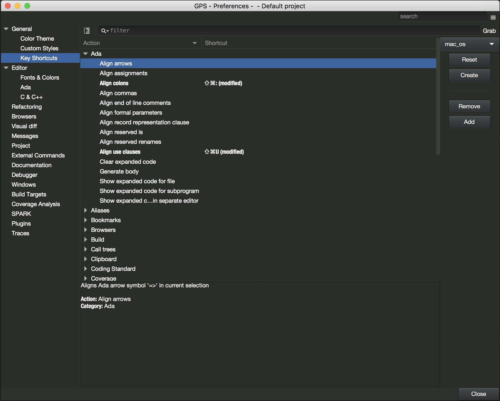
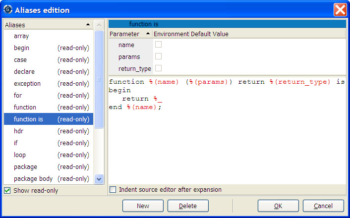

15. Customizing and Extending GPS¶
GPS provides several levels of customization, from simple preference dialogs to powerful scripting capability through the Python language. This chapters describes each of these capabilities.
15.1. Color Themes¶
The Color Theme window shows a list of color themes to choose from, presented in the form of a list of screenshots. Clicking on the button underneath a screenshot applies the given color theme to GPS.
Applying a color theme modifies the corresponding GPS preferences. It is therefore possible to customize the colors after a theme has been applied, through the preferences dialog.
GPS supports importing themes which use the TextMate (.tmTheme)
format: at startup, GPS will look in the directory
GPS_HOME/.gps/themes/ and will include all the
.tmTheme found at the first level of this subdirectory. You can
also import your themes in the INSTALL/share/gps/color_themes/themes/
directory if you want to share themes accross your team.
15.2. Custom Fonts¶
In addition to the system fonts, GPS will load the fonts located under
share/gps/fonts) in the GPS installation directory. The supported
formats are .otf, .ttf and .ttc.
This mechanism works only on UNIX/Linux systems; under Windows, fonts need to be added at the system level. Fonts that are added directly in this directory may not show up in the list of fonts in the preferences dialog, but it is still possible to use them by entering the font name manually.
15.3. The Key Shortcuts Editor¶
This editor is started through the menu, then by selecting the Preferences page. It provides a convenient way to edit the keyboard shortcuts that are available throughout GPS.
All keyboard shortcuts are associated with actions, which are either predefined in GPS, or defined in your customization python files, as documented in Customizing through XML and Python files. The main part of the editor is a list showing all actions that are defined in GPS, grouped into categories.
There are literally hundreds of such actions, and finding the one you should use might be difficult. To simplify the search, you can use the filter field at the top-right corner of the editor. Typing any text in this field will restrict the list of actions to those that contain the text either in their name, their description, their keyboard shortcut, or the menus the action is bound to. Entering keyboard shortcut is in fact easier done via the Grab button next to the filter field. Click on it, then type the shortcut you are looking for.
By using the local configuration menu (click on the top-right button of the editor), you can further restrict what is displayed in the editor:
- Shortcuts only will only display the actions that have an actual shortcut, and hide all the others.
- Show categories can be unset if you just want to display a flat list of all the actions.
- All menus in GPS are themselves bound to actions. In general, it is better to associate a key shortcut to the action itself, as opposed to the menu. For this reason, GPS by default does not list all the menus in the keyboard shortcuts editor. However, historically, GPS used to show all menus there and you can get this behavior back by enabling the Show all menus configuration.
When you select an action, GPS will display its documentation in the bottom part of the editor. This documentation also includes a pointer to the python file that defines the action (or whether it is built-in in GPS), as well as the list of menus that will execute this action when selected.
Finally, the editor includes a set of buttons on its right side, which are grouped into two logical sets:
The top three buttons allow you to control Key themes. These are sets of keyboard shortcuts that are either provided as part of GPS (for instance GPS provides an Emacs key theme which attempts to emulate some of the Emacs key bindings) or created by the user.
The first box lists all known themes, and lets you alternate between them simply by selecting their name. This will unset all existing key bindings except the ones you have set manually, and replace them with the shortcuts loaded from the key theme. This also updates all the menus to reflect the new shortcuts.
The Reset button will discard all the key bindings you have manually overridden, and revert to the theme’s default key bindings.
The Create lets you create a new key theme by copying all the current shortcuts (those from the theme and the ones you have set manually) into a new theme. In effect, this creates a new XML file in the directory
$HOME/.gps/key_themes. Removing a custom key theme is done by deleting the file from that directory, no GUI is provided for this at the moment.The second group of buttons lets you edit the shortcut for the currently selected action either by removing a shortcut, or by overriding the ones that are currently set.
When you click on the Add button, GPS waits for you to press any keyboard shortcut you wish to associate with the action. This shortcut can include multiple keys, so for instance to get an Emacs-like binding you could for instance press
Ctrl-xand then pressCtrl-k. After pressing the last key in the sequence, wait for a short delay and GPS will associate the resulting shortcut to the action and update the menus, when relevant, to show the new binding. Note that multi-key shortcuts cannot be displayed in menus due to technical limitations of the GUI toolkit.
Any change to the shortcuts is immediately and automatically saved, so that they become instantly usable in GPS, and will be restored properly when GPS is restarted.
15.4. Editing Plugins¶
You can extensively customize GPS through external plugins, either ones you write (see Customization files and plugins) or using one of the plugins in GPS’s own collection.
Some plugins are loaded by default when GPS starts (such as support for the CVS version management system and support for highlighting in various programming languages) and others are available but not loaded automatically, such as Emacs emulation mode.
Some plugins provided with GPS are:
MakefilesupportA plugin that parses a
Makefileand creates menus for each of its targets so you can easily start a make command.Cross-references enhancements
Some plugins take advantage of GPS’s cross-references information to create additional menus for navigation such as jumping to the primitive operations of Ada tagged types and to the body of Ada separate entities.
Text manipulation
Several plugins provide support for advanced text manipulation in the editors, for example to align a set of lines based on various criteria or to manipulate a rectangular selection of text.
You can graphically choose which plugins are loaded on startup by opening the preferences editor dialog ( menu), under the Plugins section. This section lists all the known plugins on the left. By selecting one particular plugin, the corresponding preferences page is opened on the right. Each plugin page comes with the same layout:
A General group
This group indicates the exact location of the plugin file. Moreover, this group contains a toggle button (Loaded at startup) which allows you to decide if this plugin should be loaded or not in the next GPS session.
As described in Customization files and plugins, GPS searches for plugins in various directories and, based on these directories, decides whether to automatically load the plugin on startup.
An optional Preferences group
This group lists all the preferences related to the selected plugin, allowing you to customize the plugin behavior. Note that this group is displayed only if preferences have been registered for this plugin.
A Documentation frame
This frame displays the plugin file documentation. By convention, each plugin starts with a comment indicating the purpose of this plugin and more detailed documentation on its usage.
If you have modified the list of plugins that should be loaded at startup, you will need to restart GPS, since it cannot unload a module due to such an action having too many possible effects on GPS: then, a dialog is displayed asking you whether you would like to exit GPS when closing the preferences editor dialog.
All the changes explicitly set by the user in the list of plugins to load
at startup are saved in HOME/.gps/startup.xml.
15.5. Customizing through XML and Python files¶
15.5.1. Customization files and plugins¶
You can customize many capabilities in GPS using files it loads at startup. For example, you can add items to the menu and tool bars as well as defining new key bindings, languages, and tools. Using Python as a programming language, you can also add new facilities and integrate your own tools into the GPS platform.
GPS searches for these customization files at startup in several different directories. Depending on where they are found, they are either automatically loaded by GPS (and thus can immediately modify things in GPS) or may only be made visible in the Plugins section of the preferences editor dialog (see Editing Plugins).
GPS searches these directories in the order given below. Any script loaded later can override operations performed by previously loaded scripts. For example, they can override a key shortcut, remove a menu, or redefine a GPS action.
In each directory name below, INSTALL is the name of the directory
in which you have installed GPS. HOME is your home directory, either
by default or as overridden by the GPS_HOME environment variable.
In each directory, only files with .xml or .py extensions
are used. Other files are ignored, although for compatibility with future
versions of GPS you should not have keep other files in these directories.
Automatically-loaded, global modules
The
INSTALL/share/gps/plug-insdirectory contains the files GPS automatically loads by default (unless overridden by the user via the Plugins section of the preferences editor dialog). These plugins are visible to any user on the system using the same GPS installation. Reserve this directory for critical plugins that almost everyone will use.Not automatically-loaded, global modules
The
INSTALL/share/gps/librarydirectory contain files GPS displays in the Plugins section of the preferences editor dialog but does not load automatically. Typically, these files add optional capabilities to GPS that many of users generally will not use.GPS_CUSTOM_PATHSet this environment variable before launching GPS to be a list of directories, separated by semicolons (‘;’) on Windows systems and colons (‘:’) on Unix systems. All files in these directories with the appropriate extensions are automatically loaded by default by GPS, unless overridden by the user through the Plugins section of the preferences editor dialog.
This is a convenient way to have project-specific customization files. You can, for example, create scripts that set the appropriate value for the variable and then start GPS. Depending on your project, this allows you to load specific aliases which do not make sense for other projects.
These directories are also used to search for icons referenced in your plug-ins.
Automatically loaded user directory
The directory
HOME/.gps/plug-insis searched last. Any script in it is loaded automatically unless overridden via the Plugins section of the preferences editor dialog.This is a convenient way for you to create your own plugins or test them before you make them available to all GPS users by copying them to one of the other directories.
Automatically loaded together with the project
When GPS loads the project file called
<your_project>.gpr, it will automatically look for a python file called<your_project>.ide.py. In this file, you are expected to define two parameterless subprograms, called initialize_project_plugin and finalize_project_plugin; GPS will call the first one when the project is loaded, and call the second one if/when another project is loaded.This method is convenient for providing project-specific behaviors, and means that the GPS plugin can be checked under version control together with the project file.
This feature is implemented via a the GPS plugin
auto_load.py.
Any script loaded by GPS can contain customization for various aspects of GPS, such as aliases, new languages or menus, in a single file.
15.5.1.1. Python files¶
You can format the Python plugin in any way you want (as long as it can be executed by Python, of course), the following formatting is suggested. These plugins are visible in the Plugins section of the preferences editor dialog, so having a common format makes it easier for users to understand each plugin:
Comment
Your script should start with a comment on its goal and usage. This comment should use Python’s triple-quote convention, rather than the start-of-line hash (‘#’) signs. The first line of the comment should be a one line explanation of the goal of the script, separated by a blank line from the rest of the comment.
Implementation
Separate the implementation from the initial comment by a form-feed (control-L); the startup scripts editor only displays the first page of the script in the first page of the editor.
If possible, scripts should avoid executing code when they are loaded. This gives the user a chance to change the value of global variables or override functions before the script is actually launched. Instead, you should to connect to the "gps_started" hook, as in:
^L ########################################################### ## No user customization below this line ########################################################### import GPS def on_gps_started (hook_name): ... launch the script GPS.Hook ("gps_started").add (on_gps_started)
15.5.1.2. XML files¶
XML files must be UTF8-encoded by default. In addition, you can specify any specific encoding through the standard command:<?xml encoding=”...” ?> declaration, as in the following example:
<?xml version="1.0" encoding="iso-8859-1"?>
<!-- general description -->
<submenu>
<title>encoded text</title>
</submenu>
These files must be valid XML files, i.e. must start with the <?xml?> tag and contain a single root XML node, the name of which is arbitrary. The format is therefore:
<?xml version="1.0" ?>
<root_node>
...
</root_node>
The first line after the <?xml?> tag should contain a comment describing
the purpose and usage of the script. This comment is made visible in the
the preferences page associated with this plugin, under Plugins
section of the preferences editor dialog. The list of valid XML nodes
that you can specify under <root> is described in later sections.
It includes:
15.5.2. Defining Actions¶
This mechanism links actions to their associated menus or key bindings. Actions can take several forms: external commands, shell commands and predefined commands, each explained in more detail below.
Define new actions using the <action> tag. This tag accepts the
following attributes:
name(required)The name by which the action is referenced elsewhere in the customization files, for example when it is associated with a menu or toolbar button. It can contain any character, although you should avoid XML special characters and it cannot start with a ‘/’.
output(optional)Where the output of the commands are sent by default. You can override this for each command using the same attribute for
<shell>and<external>tags. See Redirecting the command output.show-command(optional, default true)Whether the text of the command itself should be displayed in the same place as its output. Neither are displayed if the output is hidden. The default shows the command along with its output. You can override this attribute for each command.
show-task-manager(optional, default false)Whether an entry is in the tasks view to show this command. The progress bar indication is associated with this entry so if you hide the entry, no progress bar is shown. Alternatively, several progress bars may displayed for your action if this is enabled, which might be an issue depending on the context. You can override this attribute for each external command.
category(optional, default General)The category in the key bindings editor ( menu) in which the action is displayed. If you specify an empty string, the action is considered part of the implementation and not displayed in the editor and the user will not be able to assign it a key binding through the graphical user interface (although this can still be done via XML commands).
If you define the same action multiple times, the last definition is used. However, items such as menus and buttons that reference the action keep their existing semantics: the new definition is only used for items created after it is defined.
The <action> tag can have one or several children, all of which
specify a command to execute. All commands are executed sequentially unless
one fails, in which case the following commands are ignored.
The valid children of <action> are the following XML tags:
<external>Defines a system command (i.e. a standard Unix or Windows command).
server(optional)Execute the external command on a remote server. The values are gps_server (default), build_server, execution_server, debug_server, and tools_server. See Remote operations for information on what each of these servers are.
check-password(optional)Tell GPS to check for and handle password prompts from the external command. The values are false (default) and true.
show-command(optional)output(optional)Override the value of the attribute of the same name specified in the
<action>tag.progress-regexp(optional)progress-current(optional, default 1)progress-final(optional, default 2)progress-regexpis a regular expression that GPS matches the output of the command against. When the regular expression matches, it must provide two subexpressions whose numeric values represent the current and total number of steps to perform, which are used to display the progress indicators at the bottom-right corner of the GPS window.progress-currentis the ordinal of the subexpression containing the current step, andprogress-finalis the ordinal of the subexpression containing the total number of steps, which grows as needed. For example, gnatmake outputs the number of the file it is currently compiling and the total number of files to be compiled. However, that last number may increase, since compiling a new file may cause additional files to be compiled.The name of the action is printed in the progress bar while the action is executing. Here is an example:
<?xml version="1.0" ?> <progress_action> <action name="progress" > <external progress-regexp="(\\d+) out of (\\d+).*$" progress-current="1" progress-final="2" progress-hide="true">gnatmake foo.adb </external> </action> </progress_action>
progress-hide(optional, default true)If true, all lines matching
progress-regexpand are used to compute the progress are not displayed in the output console. Otherwise, those lines are displayed with the rest of the output.show-task-manager(optional, default inherited from<action>)Whether an entry is created in the tasks view to show this command. The progress bar indicator is associated with this entry, so if you hide the entry, no progress is shown. Alternatively, several progress bars may be displayed for your action if this is enabled, which might be an issue depending on the context.
If set a value for progress-regexp, this attribute is automatically set to true so the progress bar is displayed in the tasks view.
Note for Windows users: like Unix, scripts can be called from a custom menu. To allow that, you need to write your script in a
.bator.cmdfile and call this file. So theexternaltag would look like:<?xml version="1.0" ?> <external_example> <action name="my_command"> <external>c:\\.gps\\my_scripts\\my_cmd.cmd</external> </action> </external_example>
on-failureSpecifies a command or group of commands to be executed if the previous external command fails. Typically, this is used to parse the output of the command and fill the Locations view appropriately (see Processing the tool output).
For example, the following action spawns an external tool and parses its output to the Locations view. It calls the automatic fixing tool if the external tool fails.
You can use the %... and $... macros in this group of commands (see Macro arguments):
<?xml version="1.0" ?> <action_launch_to_location> <action name="launch tool to location" > <external>tool-path</external> <on-failure> <shell>Locations.parse "%1" category<shell> <external>echo the error message is "%2"</external> </on-failure> <external>echo the tool succeeded with message %1</external> </action> </action_launch_to_location>
shellYou can use custom menu items to invoke GPS commands using the
shelltag. These are written in one of the shell scripts supported by GPS.This tag supports the same
show-commandandoutputattributes as the<action>tag.The following example shows how to create two actions to invoke the help interactive command and open the file
main.c:<?xml version="1.0" ?> <help> <action name="help"> <shell>help</shell> </action> <action name="edit"> <shell>edit main.c</shell> </action> </help>
By default, commands are written in the GPS shell language. However, you can specify the language through the
langattribute, whose default value is “shell”. You can also specify “python”.When programming with the GPS shell, execute multiple commands by separating them with semicolons. Therefore, the following example adds a menu that lists all the files used by the current file in a Project browser:
<?xml version="1.0" ?> <current_file_uses> <action name="current file uses"> <shell lang="shell">File %f</shell> <shell lang="shell">File.uses %1</shell> </action> </current_file_uses>
<description>A description of the command, which is used in the graphical editor for the key manager. See The Key Shortcuts Editor.
<filter>,<filter_and>,<filter_or>The context in which the action can be executed. See Filtering actions.
You can mix both shell commands and external commands. For example, the following command opens an :program`xterm` (on Unix systems only) in the current directory, which depends on the context:
<?xml version="1.0" ?>
<xterm_directory>
<action name="xterm in current directory">
<shell lang="shell">cd %d</shell>
<external>xterm</external>
</action>
</xterm_directory>
As you can see in some of the examples above, some special strings are expanded by GPS just prior to executing the command, for example “%f” and “%d”. See below for a full list.
More information on chaining commands is provided in Chaining commands.
Some actions are also predefined in GPS itself. This includes, for example, aliases expansion and manipulating MDI windows. You can display all known actions (both predefined and the ones you defined in your own customization files) by opening the key shortcut editor using the menu.
15.5.3. Macro arguments¶
You use macro arguments to pass parameters to shell or external commands in any actions you define. Macro arguments are special parameters that are transformed every time the command is executed. The macro arguments below are provided by GPS. The equivalent Python code is given for some arguments. This code is useful when you are writing a full python script.
%aIf the user clicked inside the Locations view, name of the current line’s category.
%builderReplaced by the default builder configured in GPS. This can be gnatmake if your project contains only Ada code, or gprbuild for non-Ada or multi-language projects. This macro is only available in commands defined in the Build Manager and Build Launcher dialogs.
%cThe column number on which the user clicked. Python equivalent:
GPS.current_context().column()
%dCurrent directory. Python equivalent:
GPS.current_context().directory()
%dkKrunched name of the current directory.
%eName of the entity the user clicked on. Python equivalent:
GPS.current_context().entity().name()
%efName of the entity the user clicked on, possibly followed by “(best guess)” if there is an ambiguity, which may, for example, be due to cross-reference information not being up-to-date.
%EFull path to the executable name corresponding to the target.
%ekKrunched name of the entity the user clicked on. Like
%e, except long names are shorted as in%fk.%eLEither an empty string or
-eL, depending on whether the Fast Project Loading preference if set.-eLis used by GNAT tools to specify whether symbolic links should be followed when parsing projects. This macro is only available in commands defined in the Build Manager and the Build Launcher dialogs.%externalCommand line specified in the preference.
%fBase name of the currently selected file. Python equivalent:
import os.path os.path.basename (GPS.current_context().file().name())
%FAbsolute name of the currently opened file. Python equivalent:
GPS.current_context().file().name()
%fdAbsolute path for the directory that contains the current file.
%fkKrunched base name of the currently selected file. This is the same as
%fexcept that long names are shortened with some letters replaced by “[...]”. Use this in menu labels to keep the menus narrow.%fpBase name of the currently selected file. If the file is not part of the project tree or no file is selected, generate an error in the Messages view. This macro is only available in commands defined in the Build Manager and Build Launcher dialogs.
%gnatmakeThe gnatmake executable configured in your project file.
%gprbuildThe gprbuild command line configured in your project file.
%gprcleanDefault cleaner configured in GPS. This can be, for example, gnat clean or gprclean. This macro is only available in commands defined in the Build Manager and Build Launcher dialogs.
%GPSGPS’s home directory (i.e., the
.gpsdirectory in which GPS stores its configuration files).%iIf the user clicked inside the Project view, name of the parent project, i.e., the one that is importing the one clicked on. With this definition of parent project, a given project may have multiple parents, but the one here is the one from the Project view..
%lNumber of the line in which the user clicked. Python equivalent:
GPS.current_context().line()
%oObject directory of the current project.
%OObject directory of the root project.
%system_bin_dirThe directory containing the GPS executable.
%pName of the current project (not the project file). The
.gprextension is not included and the casing is the one in the project file not that of the file name itself. If the current context is an editor, the name of the project to which the source file belongs. Python equivalent:GPS.current_context().project().name()
%PName of root project. Python equivalent:
GPS.Project.root().name()
%PbBasename of the root project file.
%PlName of the root project converted to lower case.
%ppCurrent project file pathname. If a file is selected, the project file to which the source file belongs. Python equivalent:
GPS.current_context().project().file().name()
%PPRoot project pathname. Python equivalent:
GPS.Project.root().file().name()
%ppsSimilar to
%pp, except it returns the project name prepended with -P or an empty string if there is no project file selected and the current source file does not belong to any project. This is intended mostly for use with the GNAT command line tools. GPS quotes the project name if it contains spaces. Python equivalent:if GPS.current_context().project(): return "-P" & GPS.current_context().project().file().name()
%PPsSimilar to :;file:%PP, except it returns the project name prepended with -P, or an empty string if the root project is the default project. This is intended mostly for use with the GNAT command line tools.
%(p|P)[r](d|s)[f]Replaced by the list of sources or directories of a project. This list is space-separated with all names surrounded by double quotes for proper handling of spaces in directories or file names. The first letter specifies the project and successive letters which files are in the list and related options:
Proot project.
pThe selected project or the root project if project is selected.
rRecurse through the projects, including all subprojects.
dList source directories. Python equivalent:
GPS.current_context().project().source_dirs()
sList source files. Python equivalent:
GPS.current_context().project().sources()
fWrite the list into a file and replace the parameter with the name of the file. This file is never deleted by GPS; you must do so manually in the plugin when you no longer need it.
Examples:
%PsList of source files in the root project.
%prsList of files in the current project and all imported sub projects, recursively.
%prdfName of a file containing a list of source directories in the current project and all imported sub projects, recursively.
%sText selected by the user, if a single line was selected. If multiple lines are selected, returns the empty string
%SText selected by the user or the current entity if no selection. If the entity is part of an expression (“A.B.C”), the whole expression is returned instead of the entity name.
%switches(tool)Value of IDE'Default_Switches (tool). If you have a tool whose switches are defined via an XML file in GPS, they are stored as Default_Switches (xxx) in the IDE package, and you can retrieve them using this macro. The result is a list of switches, or an empty list if none.
This macro is only available in the commands defined in the Build Manager and Build Launcher dialogs.
%TSubtarget being considered for building. Depending on the context, this can correspond to such things as the base filename of a main source or
makefiletargets. This macro is only available in the commands defined in the Build Manager and Build Launcher dialogs.%TTLike %TT, but the full path to main sources rather than the base filename.
%TPSimilar to %TT%, but returns the name of the project to which the main belongs.
%python(cmd)Executes the python command cmd. It should return either a string (which is inserted as is in the command line), a list of strings (which are each passed as a separate argument), or a boolean. If it returns False, then the target is not executed at all.
The cmd itself can include other macros, which will be expanded. Not all macros are expanded though. For instance, a %python() cannot include another %(python), nor any other function-like macros, like %vars() for instance.
The python function should have no side effect if possible, since it might be called more than once (for instance as part of showing what the command line will be when GPS display the dialog to let you edit that command line prior to actual execution).
Due to the way command-line parsing works, it is recommended to put triple quotes around the whole argument, as in:
-foo """%python(func("%TT", 1))""" -bar -foo """%python("-one" if Choice else "-two")"""
to make sure the python argument is not split on spaces for instance. The closing parenthesis must be the last character before the closing triple quotes.
%attr(Package'Name[,default])Project attribute Package'Name`L: the attribute :file:`Name from the package
Package. You can omitPackage'ifNameis a top level attribute (e.g.Object_Dir). If the attribute is not defined in the project, an optional default value is returned, or an empty string if none is specified.This macro is only available in the commands defined in the Build Manager and Build Launcher dialogs and only supports attributes that return a single string, not those returning lists.
%dirattr(Package'Name[,default])Like
%attr, but the directory part of an attribute value.%baseattr(Package'Name[,default])Like
%attr, but the base name an attribute value.%varsList of switches of the form
variable=value, where variable is the name of a scenario variable and value its current value, as configured in the Scenario view. All scenario variables defined in the current project tree are listed. You can also use%vars(-D)to generate a list of switches of the form-Dvariable=value. This macro is only available in the commands defined in the Build Manager and Build Launcher dialogs.%XList of switches of the form
-Xvariable=value, where variable is the name of a scenario variable and value its current value, as configured in the Scenario view. All the scenario variables defined in the current project tree are listed. This macro is only available in the commands defined in the Build Manager and Build Launcher dialogs.%targetThe string
--target=twhere t is the build target, as determined by the current toolchain.%%The literal
%character.%tsThe short name for the current window (‘Search’, ‘Project’, ‘Outline’, or the base name for the current file).
%tlThe long name for the current window (‘Search’, ‘Project’, ‘Outline’ or the absolute path name for the current file).
%rblThe name of the Remote Build server (defaults to ‘localhost’ when no such server is configured, hence the final ‘l’ in the name of the macro).
%(env:VAR)Value of an environment variable with name VAR.
Another type of macros are expanded before commands are executed: they start
with the $ character and represent parameters passed to the action
by its caller. Depending on the context, GPS passes zero, one or many
arguments to an action. You will commonly use these macros when you define
your own VCS system. Also see the shell function execute_action,
which executes an action and passes it arguments.
These macros are the following
$1, $2, ... $nWhere n is a number. These are the argument with the corresponding number that was passed to the action.
$1-, $2-, ... $n-*Likewise, but a string concatenating the specified argument and all subsequent arguments.
$*String concatenating all arguments passed to the action.
$repeatNumber of times the action has been consecutively executed. This is 1 (the first execution of the action) unless the user invoked the Repeat Next action.
By default, when Repeat Next is invoked by the user, it repeats the following action the number of times the user specified. However, in some cases, either for efficiency reasons or for other technical reasons, you may want to handle the repeat yourself. Do this with the following action declaration:
<action name="my_action"> <shell lang="python">if $repeat==1: my_function($remaining + 1)</shell> </action>
def my_function (count): """Perform an action count times""" ...
The idea here is to do something only the first time the action is called (the if statement), but pass your shell function the number of times it should repeat (the
$remainingparameter).$remainingLike $repeat, but indicates the number of times the action remains to be executed. This is 0 unless the user invoked the Repeat Next action.
15.5.4. Filtering actions¶
By default, an action can execute in any context in GPS. When the user selects the menu or key, GPS executes the action. You can restrict when an action is permitted. If the current context does not permit the action, GPS displays an error message.
You can use one of several types of restrictions:
Using macro arguments (see Macro arguments).
If an action uses one of the macro arguments defined in the previous section, GPS checks that the information is available. If not, it will not run any of the shell commands or external commands for that action.
For example, if you specified
%Fas a parameter to a command, GPS checks there is a current file such as a currently selected file editor or a file node selected inside the Project view. This filtering is automatic: you do not have to do anything else.However, the current context may contain more information than you expect. For example, if a user clicks on a file name in the Project view, the current context contains a file (and hence satisfies
%F) and also a project (and hence satisfies%pand similar macros).Defining explicit filters
You can also specify explicit restrictions in the customization files by using the
<filter>,<filter_and>and<filter_or>tags. Use these tags to further restrict when the command is valid. For example, you can use them to specify that the command only applies to Ada files, or only if a source editor is currently selected.
15.5.4.1. The filters tags¶
You can define filters in one of two places in the customization files:
At the top level.
You can define named filters at the same level as other tags such as
<action>,<menu>or<button>tags. These are global filters that can be referenced elsewhere.As a child of the
<action>tag.These filters are anonymous, although they provide exactly the same capabilities as the ones above. These are intended for simple filters or filters that you use only once.
There are three different kinds of tags representing filters:
<filter>A simple filter. This tag has no child tag.
<filter_and>All the children of this tag are merged to form a compound filter. they are each evaluated in turn and if one of them fails, the whole filter fails. Children of this tag can be of type
<filter>,<filter_and>or :file: <filter_or>.<filter_or>Like
<filter_and>, but as soon as one child filter succeeds, the whole filter succeeds.
If several filter tags are found under an <action> tag, they act
as if they were all under a single <filter_or> tag.
The <filter>, <filter_and>, and <filter_or> tags
all accept the following common attributes:
name(optional)Used to create named filters that can be reused, via the id attribute, elsewhere in actions or compound filters. The name can have any form.
error(optional)Error message GPS will display if the filter does not match and hence the action cannot be executed. If you are using the
<filter_and>or<filter_or>tag, GPS will only display the error message of that filter.
In addition, the <filter> tag has the following specific
attributes:
id(optional)If this attribute is specified, all other attributes are ignored. Use this to reference a named filter previously defined. Here is how you can make an action depend on a named filter:
<?xml version="1.0" ?> <test_filter> <filter name="Test filter" language="ada" /> <action name="Test action" > <filter id="Test filter" /> <shell>pwd</shell> </action> </test_filter>
GPS contains a number of predefined filters:
Source editorMatch if the currently selected window in GPS is an editor.
Explorer_Project_NodeMatch if clicking on a project node in the Project view.
Explorer_Directory_NodeMatch if clicking on a directory node in the Project view.
Explorer_File_NodeMatch if clicking on a file node in the Project view.
Explorer_Entity_NodeMatch if clicking on an entity node in the Project view.
FileMatch if the current context contains a file (for example the focus is on a source editor or the focus is on the Project view and the currently selected line contains file information).
language(optional)Name of the language that must be associated with the current file in order for the filter to match. For example, if you specify ada, the user must have an Ada file selected for the action to execute. GPS determines the language for a file by using several methods such as looking at file extensions in conjunction with the naming scheme defined in the project files.
shell_cmd(optional)Shell command to execute. The output of this command is used to find if the filter matches: if it returns “1” or “true”, the filter matches. In any other case, the filter fails.
Macro arguments (such as
%fand %p) may be used in the text of the command to execute.shell_lang(optional)Which language the command in
shell_cmdis written. The default if that the command is written for the GPS shell.module(optional)The filter only matches if the current window was created by this specific GPS module. For example, if you specify
Source_Editor, the filter only matches if the active window is a source editor.You can obtain the list of module names by typing lsmod in the shell console at the bottom of the GPS window.
This attribute is useful mostly when creating new contextual menus.
When several attributes are specified for a <filter> node (which
cannot be combined with id), they must all match for the action to
be executed:
<?xml version="1.0" ?>
<!-- The following filter only matches if the currently selected
window is a text editor editing an Ada source file -->
<ada_editor>
<filter_and name="Source editor in Ada" >
<filter language="ada" />
<filter id="Source editor" />
</filter_and>
<!-- The following action is only executed for such an editor -->
<action name="Test Ada action" >
<filter id="Source editor in Ada" />
<shell>pwd</shell>
</action>
<!-- An action with an anonymous filter. it is executed if the
selected file is in Ada even if the file was selected through
the project view -->
<action name="Test for Ada files" >
<filter language="ada" />
<shell>pwd</shell>
</action>
</ada_editor>
15.5.7. Adding tool bar buttons¶
As an alternative to creating new menu items, you can create new buttons on
the tool bar, by using the <button> tag. Like the <menu>
tag, it requires an action attribute, which specifies what should
be done when the button is pressed. The button is not created if the action
action does not exist.
This tag accepts one optional attribute, iconname which you can use to
override the default image registered for the action or set one if the
action no image. See Adding custom icons for more information on icons.
The following example defines a new button:
<?xml version="1.0" ?>
<stats>
<button action="undo" /> <!-- use default icon -->
<button action="execute my stats" iconname='my-image' />
</stats>
Use the <button> tag to create a simple button that the user can
press to start an action. GPS also supports another type of button, a combo
box, from which the user can choose among a list of choices. Create a
combo box with the <entry> tag, which accepts the following
attributes:
id(required)Unique id for this combo box, used later on to refer it, specifically from the scripting languages. It can be any string.
label(default)Text of a label to display on the left of the combo box. If not specified, no text is displayed
on-changed(default)Name of a GPS action to execute whenever the user selects a new value in the combo box. This action is called with two parameters: the unique id of the combo box and the newly selected text.
It also accepts any number of <choice> tags, each of which defines one
value the user can choose from. These tags accept one optional attribute,
on-selected, which is the name of a GPS action to call when that
value is selected:
<action name="animal_changed">
<shell>echo A new animal was selected in combo $1: animal is $2</shell>
</action>
<action name="gnu-selected">
<shell>echo Congratulations on choosing a Gnu</shell>
</action>
<entry id="foo" label="Animal" on-changed="animal_changed">
<choice>Elephant</choice>
<choice on-selected="gnu-selected">Gnu</choice>
</entry>
GPS provides a more convenient interface for Python, the
GPS.Toolbar class, which provides the same flexibility as above,
but also gives you dynamic control over the entry and allows placement of
buttons at arbitrary positions in the toolbar. See the Python
documentation.
15.5.8. Binding actions to keys¶
All actions can be bound to specific key shortcuts through the
<key> tag. This tag has two different forms:
<key load=’file.xml’/> tells GPS to load the given key theme (either from the GPS predefined directory or from the user’s own directory.
<key action=’name’ exclusive=’true’>shortcut</key> It requires one
actionattribute to specify what to do when the key is pressed. The name of the action can start with a ‘/’ to indicate that a menu should be executed instead of a user-defined action (although it is preferred to bind to an actual action). If the action is specified as an empty string, the key is no longer bound to any action.This tag does not contain any child tags. Instead, its text contents specifies the keyboard shortcut. The name of the key can be prefixed by any combination of the following:
- control- is the control key on the keyboard;
- alt- is the alt key on the keyboard (left or right) or the option key on OSX;
- shift- is the shift key. It should not be necessary if you want to point to symbols for which shift would be necessary, so for instance on an US keyboard, shift-% and % are the same);
- cmd- is the command key on OSX, or the alt key on other keyboards;
- primary- is the command key on OSX, or the control key on other keyboards.
You can also define multi-key bindings similar to Emacs’ by separating them by a space. For example, control-x control-k means the user should press
Ctrl-x, followed by aCtrl-kto activate the corresponding action. This only works if the first key is not already bound to an action. If it is, you must first unbind it by passing an empty action to<key>.This XML node has one optional attribute exclusive. When this is set to true, the shortcut will no longer be used for any action that might be already using it. If you set it to false, multiple actions will be bound to the same shortcut. The first one for which the filter applies (i.e. the current context is right for the action) will be executed.
Use an empty string as the key binding if you wish to deactivate a preexisting binding. The second example below deactivates the standard binding:
<?xml version="1.0" ?>
<keys>
<key action="expand alias">control-o</key>
<key action="Jump to matching delimiter" />
<!-- Bind a key to a menu -->
<key action="/Window/Close">control-x control-w</key>
</key>
If you bind multiple actions to the same key binding, they are executed sequentially, followed by any menu for which this key is an accelerator.
When GPS processes a <key> tag, it does the following:
- Removes all actions bound to that key if exclusive is true. This
ensures that any action
previously associated with it, either by default in GPS or in some other
XML file, is no longer executed. This removal is not done when loading
key themes (i.e. XML files from
$HOME/.gps/key_themesdirectory), so it is possible to bind an action to multiple key bindings as part of a key theme. - Adds the new key to the list of shortcuts that can execute the action. Any existing shortcut for the action is preserved, allowing multiple shortcuts for the action.
15.5.9. Configuring preferences¶
15.5.9.1. Creating new preferences¶
GPS contains a number of predefined preferences to configure its behavior and appearance, which are all customizable through the menu.
You can add preferences for your extension modules through the usual GPS customization files. Preferences are different from project attributes (see Defining project attributes); the latter varies depending on which project is loaded by the user, while preferences are always set to the same value independent of what project is loaded.
You create your own preferences with the <preference> tag, which
accepts the following attributes:
name(required)Name of the preference, used both when the preference is saved by GPS in the
$HOME/.gps/preferencesfile and to query the value of a preference interactively through theGPS.Preferenceclass in the GPS shell or Python. These names cannot contain spaces or underscore characters: use minus signs instead of the latter.page(optional, default General)Name of the page in the preferences editor where the preference are edited. If the page does not already exist, GPS automatically creates it. If this is the empty string, the preference is not editable interactively. Use this to save a value from one session of GPS to the next without allowing the user to change it. Subpages are referenced by separating pages name with slashes (
/).default(optional, default depends on type of the preference)Default value of the preference. If not specified, this is 0 for integer preferences, the empty string for string preferences, True for boolean preferences, and the first possible choice for choice preferences.
tip(optional)Text of the tooltip that appears in the preferences editor dialog.
label(required)Name of the preference as it appears in the preferences editor dialog
minimum(optional, default 0),maximum(default 10)Minimum and maximum values for integer preferences.
type(required)Type of the preference. Must be one of:
boolean
integer
string
font
color
A color name, in the format of a named color such as “yellow”, or a string like “#RRGGBB”, where RR is the red component, GG is the green component, and BB is the blue component.
choices
The preference is a string whose value is chosen among a static list of possible values, each of which is defined in by a
<choice>child of the<preference>node.
Here is an example that defines a few new preferences:
<?xml version="1.0"?>
<custom>
<preference name="my-int"
page="Editor"
label="My Integer"
default="30"
minimum="20"
maximum="35"
page="Manu"
type="integer" />
<preference name="my-enum"
page="Editor:Fonts & Colors"
label="My Enum"
default="1"
type="choices" >
<choice>Choice1</choice>
<choice>Choice2</choice> <!-- The default choice -->
<choice>Choice3</choice>
</preference>
</custom>
The values of the above preferences can be queried in the scripting languages:
GPS shell:
Preference "my-enum" Preference.get %1
Python:
val = GPS.Preference ("my-enum").get () val2 = GPS.Preference ("my-int").get ()
15.5.9.2. Setting preferences values¶
You can force specific default values for the preferences in the
customization files through the <pref> tag. This is the same tag
used by GPS itself when it saves the preferences edited via the preferences
dialog.
This tag requires one attribute, name, the name of the
preference for which you are setting a default value. These names are
defined when the preference is registered in GPS. You can find them by
looking at the $HOME/.gps/preferences file for each user or by
looking at one of the predefined GPS themes.
It accepts no child tags, but the value of the <pref> tag defines
the default value of the preference, which is used unless the user has
overridden it in his own preferences file.
Any setting you defined in the customization files is overridden by a specification of that preference in the user’s preferences file.
The <pref> tag is mostly intended for use in themes (see
Creating themes).
15.5.10. Creating themes¶
You can create your own themes and share them between users and then selectively choose which themes each user want to activate through the preferences dialog.
You create new themes in the customization files using the
<theme> tag.
This tag accepts the following attributes:
name(required)Name of the theme as it appears in the preferences dialog
description(optional)This text should explain what the theme does. It appears in the preferences dialog when the user selects that theme.
category(optional, default General)Name of the category in which the theme should be presented in the preferences dialog. Categories are currently only used to organize themes graphically. GPS creates a category automatically if you choose one that has not previously been created.
This tag accepts any other customization tags including setting preferences
(<pref>), defining key bindings (<key), and defining menus
(<menu>).
If you define the same theme in multiple locations (either multiple times in the same customization file or in different files), the customizations in each are merged. The first definition of the theme seen by GPS sets the description and category for the theme.
All child tags of the theme are executed when the user activates the theme
in the preferences dialog. There is no strict ordering of the child tags.
The default order is the same as for the customization files themselves:
first the predefined themes of GPS, then the ones defined in customization
files found through the GPS_CUSTOM_PATH directories, and finally
the ones defined in files found in the user’s own GPS directory.
Here is an example of a theme:
<?xml version="1.0" ?>
<my-plugin>
<theme name="my theme" description="Create a new menu">
<menu action="my action"><title>/Edit/My Theme Menu</title></menu>
</theme>
</my-plugin>
15.5.11. Defining new search patterns¶
The search dialog contains a number of predefined search patterns for Ada, C, and C++. These are generally complex regular expressions, presented in the dialog with a more descriptive name. For example, Ada assignment.
Define your own search patterns in the customization files using the
<vsearch-pattern> tag. This tag can have the following child tags:
<name>String displayed in the search dialog to represent the new pattern. This is the text the user sees (instead of the often hard-to-understand regular expression)
<regexp>Regular expression to use when the pattern is selected by the user. Be careful to protect reserved XML characters such as
<and replace them by their equivalent expansion (< in that case).This tag accepts one optional attribute,
case-sensitivea boolean that specifies whether the search should distinguish lower case and upper case letters. The default is false.<string>A constant string that should be searched. Provide either
<regexp>or<string>, but not both. If both are provided, the first<regexp>child found is used. The tag accepts the same optional attributecase-sensitiveas above.
Here is a short example, showing how the Ada assignment pattern is defined:
<?xml version="1.0" ?>
<search>
<vsearch-pattern>
<name>Ada: assignment</name>
<regexp case-sensitive="false">\\b(\\w+)\\s*:=</regexp>
</vsearch-pattern>
</search>
15.5.12. Defining custom highlighters¶
The mechanism here described allows any user to add syntax highlighting to GPS for any language in a declarative domain specific language.
15.5.12.1. Tutorial: Add support for python highlighting in GPS¶
In this short tutorial, we will walk through the steps needed to create a small plugin for GPS that will allow it to highlight python code.
The idea of the whole API is for the user to declare matchings in a declarative way, specifying the matcher via a classic regular expression syntax, and taking the appropriate action depending on the kind of the matcher. There are basically two types of matches:
- Simple matchers will just apply a tag to the matched text region. This will be useful to highlight keywords or number expressions in source, for example.
- Region matchers will change the set of matchers to the one specified in the region definition. That way, you can do more complex highlighters in which some simple matchers will work only in some context.
In addition to that, you have a set of helpers that will simplify common patterns based on those two primitives, or make some additional things possible. See the full API doc below for more details.
IMPORTANT NOTE: As you will see, the way you register an highlighter is by specifying the language it applies to in the call to register_highlighter. If you want to highlight a language that is not yet known to GPS, you have to register a new language. The way to do that is detailled in the Adding support for new languages section.
15.5.12.1.1. First step, creating a dumb highlighter¶
As a first step, we will just create an highlighter that highlights the self symbol in python, as a simple hello world.:
from highlighter.common import *
register_highlighter(
language="python",
spec=(
# Match self
simple("self", tag=tag_keyword),
)
)
As we can see, the first step to register a new highlighter is to call the
register_highlighter() function, giving the name of the language and
the spec of the language as parameters.
The spec parameter is a tuple of matchers. In this case we have only one, a simple matcher, as described above, which will match the “self” regexp, and apply the “keyword” tag everytime it matches.
The tag parameter is the name of the tag that will be used to highlight matches
. GPS has a number of built-in tags for highlighting, that are all defined in
the highlighter.common module. They may not be sufficient, so the
user has the possibility of creating new styles, a capability that we will talk
about later on.
15.5.12.1.2. Second step, discovering our first helper¶
Highlighting just self is a good first step, but we would like to be a little more pervasive in our highlighting of keywords. Fortunately for us, python has a way to dynamically get all the language’s keywords, by doing:
from keywords import kwlist
By combining that with the words() helper, we can easily create a
matcher for every python keyword:
register_highlighter(
language="python",
spec=(
# Match keywords
words(kwlist, tag="keyword"),
)
)
The words() helper just creates a simple matcher for a list of words.
words(["a", "b", "c"], tag="foo") is equivalent to simple(
"a|b|c", tag="foo").
15.5.12.1.3. Third step, highlighting strings literals in a clever way¶
Next, we’re gonna want to highlight some literals. Let’s start by strings, because they are hard and interresting. A string is a literal that starts with a ” or a ‘ character, and ends with the same character, but one needs to be careful because there are several corner cases:
- If an escaped string delimiter occurs in the string (” in a ” string for example), it should not end the string !
- In python, strings delimited by ” or ‘ are single line strings. It means that the match needs to be terminated at the end of the line
- BUT, if the last character of the line is a backslash, the string actually continues on the next line !
Additionally, some editors are nice enough to highlight escaped chars in a specific colors inside string literals. Since we want our highlighter to be cutting edge, we will add this requirement to the list. Here is the region declaration for this problem, for the case of single quoted strings:
string_region = region(
r"'", r"'|[^\]$", tag="string",
highlighter=(
simple(r"\.", tag=tag_string_escapes),
)
)
Here are the important points:
- The first parameter is the regular expression delimiting the beginning of the region, in this case a simple quote.
- The second parameter is the regular expression delimiting the end of the region, in this case, either a simple quote, either an end of line anchor ($). This way, a string will be terminated after a new line.
- The way both line continuations and escaped quotes are handled is actually very simple: The simple matcher declared inside the region’s highlighter will match any character preceded by a backslash, including newlines. An important point to understand is that, when inside a region, the matcher for ending the region has the lowest priority of all. In this case, it means the simple matcher will consume both quotes and new lines if they are preceded by a backslash, and so they won’t be available for the ending matcher anymore.
15.5.12.1.4. Creating custom style tags¶
If the style tags predefined in the highlighter.common module are not
enough, you can define new ones with the new_style() function.
When you define a new style via this function, a corresponding preference will be created in the GPS preferences, so that the user can change the color later.
The tag_string_escapes common tag is defined with this function this way:
tag_string_escapes = new_style(lang="General", name="string_escapes",
foreground_colors=('#875162', '#DA7495'))
The first parameter is the name of the language for which this applies, or “General” if this can potentially apply to several languages. This will be used by GPS to choose which preference category will be used for the corresponding preference.
The second parameter is the name of the style.
The third parameter is the colors that will be used by default for this style. The first color is the one used for light themes, the second color is the one used for dark themes.
15.5.12.1.5. Going further¶
All the details of the engine are not yet documented, but if while creating your highlighter you find yourself stuck, don’t hesitate to look at the C or Python highlighters, in the c_highlighter and python_highlighter modules that are shipped with your version of GPS. Those are complete real world examples that are used by GPS to highlight files in those languages.
15.5.12.2. API Documentation¶
-
highlighter.interface.existing_style(pref_name, name='', prio=-1)¶ Creates a new style to apply when a matcher succeeds, using an existing style as a basis. This probably should not be used directly, but one should use one of the existing styles declared in
Highlighter.common()Parameters: - pref_name (string) – The name of the preference to bind to the style
- name (string) – The name of the style, used for the underlying gtk tag
- prio (int) – The priority of the style compared to others. Higher priority styles will take precedence over lower priority ones. -1 means default priority: tags added last have precedence.
Return type: highlighter.engine.Style
-
highlighter.interface.new_style(lang, name, label, doc, foreground_colors, background_colors=('transparent', 'transparent'), font_style='default', prio=-1)¶ Creates a new style to apply when a matcher successfully matches a portion of text. A style is the conflation of
- An editor tag with corresponding text style
- A user preference that will be added to the corresponding language page
Parameters: - lang (string) – The language for which this style will be applicable . This is used to automatically store the preference associated with this style in the right preferences subcategory.
- name (string) – The name of the style, used to identify it.
- label (string) – The label that will be shown in the preferences dialog for this style.
- doc (string) – The documentation that will be shown in the preferences dialog for this style.
- foreground_colors (string, string) – The foreground colors of the style, expressed as a tuple of two CSS-like strings, for example (“#224488”, “#FF6677”). The first color is used for light themes, the second is used for dark themes
- background_colors (string, string) – The background colors of the style.
- font_style (string) – : The style of the font, one of “default”, “normal”, “bold”, “italic” or “bold_italic”
- prio – The priority of the style. This determines which style will
prevail if two styles are applied to the same portion of text. See
Highlighter.region()-1 means default priority: tags added last have precedence.
Return type: highlighter.engine.Style
-
highlighter.interface.region(start_re, end_re, tag=None, name='', highlighter=(), matchall=True, igncase=False)¶ Return a matcher for a region, which can contain a whole specific highlighter
Parameters: - start_re (string) – The regexp used to match the start of the region
- end_re (string) – The regexp used to match the end of the region
- tag (highlighter.engine.Style) – The Tag which will be used to highlight the whole region. Beware, if you plan to apply other tags to elements inside the region, they must have an higher priority than this one !
Return type: RegionMatcher
-
highlighter.interface.region_ref(name)¶ Used to reference a region that already exists. The main and only use for this is to define recursive regions, eg. region that can occur inside themselves or inside their own sub regions. See the tutorial for a concrete use case.
The returned region reference will behave exactly the same as the original region inside the highlighter.
Parameters: name – The name of the region. Return type: RegionRef
-
highlighter.interface.region_template(*args, **kwargs)¶ Used to partially construct a region, if you want to define for example, several regions having the same sub highlighter and tag, but not the same start and end regular expressions.
Parameters: - args – Positional params to pass to region
- kwargs – Keyword params to pass to region
Returns: A partially constructed region
-
highlighter.interface.register_highlighter(language, spec, igncase=False)¶ Used to register the declaration of an highlighter. See the tutorial for more information
Parameters: - language (string) – The language to be used as a filter for the highlighter.
- spec (tuple) – The spec of the highlighter.
-
highlighter.interface.search_for_capturing_groups(regexp_string)¶ Return a list of matches for capturing groups in a regular expression.
Parameters: regexp_string (str) – The regular expression we want to analyze.
-
highlighter.interface.simple(regexp_string, tag)¶ Return a simple matcher for a regexp string. Raises an exception if capturing groups are present in the regular expression (not supported by the engine).
Parameters: regexp_string (str) – The regular expression for this matcher Return type: SimpleMatcher
-
highlighter.interface.words(words_list, **kwargs)¶ Return a matcher for a list of words
Parameters: words_list (str|list[str]) – The list of words, either as a string of “|” separated words, or as a list of strings. Return type: SimpleMatcher
15.5.13. Adding support for new languages¶
You have two ways of defining a new language in GPS:
- Basic support from registering languages in Python is provided.
- If the support provided in Python is not enough, more extensive support is provided via the XML interface. With time all capabilities will be provided in the Python interface, and the XML facility will be deprecated.
15.5.13.1. Adding support for a new language via the Python interface¶
You can register a new language in Python via the class GPS.Language.
The first step is to define a new subclass of GPS.Language, the second is to
register it via a call to GPS.Language.register. Here is an example
class JavaLang(GPS.Language):
def __init__(self):
pass
GPS.Language.register(JavaLang(), "java", ".java", "", "", INDENTATION_SIMPLE)
The class is provided to provide the possibility of future further user customization for a specific language.
For the moment, the support is rudimentary. This is mostly useful if you want to then register an highlighter for the language in question via the new highlighters API, see Defining custom highlighters.
15.5.13.2. Adding support for a new language via the XML interface¶
Define new languages in a custom file by using the <Language>
tag. Defining languages gives GPS the ability to perform language-specific
operations such as highlighting the syntax of a file, exploring a file
using the Project view, and finding files associated with that
language.
NOTE: The highlighting of syntax via the mechanisms described here are deprecated. See Defining custom highlighters for the current way to highlight custom languages.
The following child tags are available:
<Name>Short string giving the name of the language.
<Parent>Optional name of language that provides default values for all properties not explicitly set.
<Spec_Suffix>String identifying the filetype (including the ‘.’ character) of spec (definition) files for this language. If the language does not have the notion of spec or definition file, you should use the
<Extension>tag instead. Only one such tag is permitted for each language.<Body_Suffix>String identifying the filetype of body (implementation) files for this language. Only one such tag is permitted for each language.
<Obj_Suffix>String identifying the extension for object files for this language. For example, it is
.ofor C or Ada and.pycfor Python. The default is -, which indicates there are no object files.<Extension>String identifying one of the valid filetypes for this language. You can specify several such children.
<Keywords>Regular expression for recognizing and highlighting keywords. You can specify multiple such tags, which will all be concatenated into a single regular expression. If the regular expression needs to match characters other than letters and underscore, you must also edit the
<Wordchars>tag. If you specified a parent language, you can append to the parent<Keywords>by providing amodeattribute set to append (the default formodeis override, where the<Keywords>definition replaces the one from the parent).You can find the full grammar for regular expression in the spec of the file
g-regpat.adsin the GNAT run time.<Wordchars>Most languages have keywords that only contain letters, digits, and underscore characters. If you want to also include other special characters (for example
<and>in XML), use this tag. The value of this tag is a string consisting of all the special characters that may be present in keywords. You need not include letters, digits or underscores.<Context>Information that GPS uses to determine the syntax of a file for highlighting purposes. The following child tags are defined:
<Comment_Start>,<Comment End>Strings that determine the start and end of a multiple-line comment.
<New_Line_Comment_Start>A regular expression defining the beginning of a single line comment that ends at the next end of line. This regular expression may contain multiple possibilities, such as ;|# for comments starting after a semicolon or after the pound sign. If you specified a parent language, you can append to the parent’s
<New_Line_Comment_Start>by including amodeattribute with a value of append (the default is override, meaning the<New_Line_Comment_Start>definition replaces the one in the parent).<String_Delimiter>Character defining the string delimiter.
<Quote_Character>Character defining the quote (also called escape) character, used to include the string delimited inside a string (
\in C).<Constant_Character>Character defining the beginning of a character literal, in languages that support such literals (e.g., C).
<Can_Indent>Boolean indicating whether indentation is enabled. The indentation mechanism is the same for all languages: the number of spaces at the beginning of the current line is used when indenting the next line.
<Syntax_Highlighting>Boolean indicating whether the language syntax should be highlighted and colorized.
<Case_Sensitive>Boolean indicating whether the language (in particular the identifiers and keywords) is case sensitive.
<Accurate_Xref>Boolean indicating whether cross reference information for this language is fully accurate or whether it is either an approximation or not present). Default is False.
<Use_Semicolon>Boolean indicating whether semicolons are expected in sources and can be used as a delimiter for syntax highlighting purposes. Default is False.
<Categories>Optional tag to describe the categories supported by the Project view. This tag contains a list of
<Category>tags, each describing the characteristics of a single category, with the following child tags:<Name>Name of the category, either one of the predefined categories or a new name, in which case GPS will create a new category.
The predefined categories are package, namespace, procedure, function, task, method, constructor, destructor, protected, entry, class, structure, union, type, subtype, variable, local_variable, representation_clause, with, use, include, loop_statement, case_statement, if_statement, select_statement, accept_statement, declare_block, simple_block, and exception_handler.
<Pattern>Regular expression to select a language category. Like
<Keywords>tags, if you specify multiple<Pattern>tags, GPS will concatenate them into a single regular expression.<Index>Index of the subexpression in the pattern that extracts the name of the entity in this category.
<End_Index>Optional tag providing the index of the subexpression used to start the next search. The default is the end of the pattern.
<Project_Field>Information about the tools used to support this language. The name of these tools is stored in the project files so you can specify only a limited number of tools. This tag is currently only used by the project properties and wizard and not by other components of GPS.
This tag two attributes:
NameName of the attribute in the project file. Currently, you can only specify compiler_command.
IndexIf present, specifies the index to use for the attribute in the project file. The line defining this attribute looks like:
for Name ("Index") use "value";
e.g:
for Compiler_Command ("my_language") use "my_compiler";
The value of the index should be either the empty string or the name of the language.
The value of this attribute is the string to use in the project properties editor when editing this project field.
here is an example of a language definition for the GPS project files:
<?xml version="1.0"?>
<Custom>
<Language>
<Name>Project File</Name>
<Spec_Suffix>.gpr</Spec_Suffix>
<Keywords>^(case|e(nd|xte(nds|rnal))|for|is|</Keywords>
<Keywords>limited|null|others|</Keywords>
<Keywords>p(ackage|roject)|renames|type|use|w(hen|ith))\\b</Keywords>
<Context>
<New_Line_Comment_Start>--</New_Line_Comment_Start>
<String_Delimiter>"</String_Delimiter>
<Constant_Character>'</Constant_Character>
<Can_Indent>True</Can_Indent>
<Syntax_Highlighting>True</Syntax_Highlighting>
<Case_Sensitive>False</Case_Sensitive>
</Context>
<Categories>
<Category>
<Name>package</Name>
<Pattern>^[ \\t]*package[ \\t]+((\\w|\\.)+)</Pattern>
<Index>1</Index>
</Category>
<Category>
<Name>type</Name>
<Pattern>^[ \\t]*type[ \\t]+(\\w+)</Pattern>
<Index>1</Index>
</Category>
</Categories>
</Language>
</Custom>
15.5.14. Defining text aliases¶
GPS provides a mechanism known as “aliases”. The user can define these using the menu.
Each alias has a name, generally a short string of characters. When you
type that string in any textual entry in GPS (usually a source editor, but
also entry fields anywhere, such as in a file selector) and press the
special activation key (by default Ctrl-o, but controlled by a
preference), GPS replaces the string by the text you have associated with it.
Alias names can contain any character except newline but must start with a letter. GPS looks backward to the start of the word before the current cursor position, and if the characters between there and the cursor position is an alias name (using a case insensitive comparison), it expands the alias.
The alias editor is divided into three main parts. The left shows the list of currently defined aliases. Clicking on any of them displays its replacement text. If you click a second time, GPS displays a text entry allowing you to rename that alias. A checkbox at the bottom determines whether the editor displays read-only aliases (i.e., system-wide aliases).
The second part displays the expansion text for the alias, at the bottom right corner. This text can span multiple lines and contain macros, which are displayed in a different color. You can insert these macros either by typing their symbols (as shown below) or by right-clicking in the editor and selecting the entity in the contextual menu.
The alias editor supports the following macros:
%_Position in the replacement text where the cursor is placed.
%nameName of a parameter. name can contain any characters except closing parenthesis. See below for more information on parameters.
%DCurrent date, in ISO format. The year is displayed first, then the month and day.
%HCurrent time (hour, minutes, and seconds).
%OFor recursive aliases expansion. This macro expands the text before it in the current replacement of the parameters and possibly other recursive expansions. This is similar to pressing
Ctrl-oin the expansion of the alias.You cannot expand an alias recursively when already expanding that alias. If the alias expansion for, e.g., procedure contains procedure%O, the inner procedure is not expanded.
%%A percent sign.
The remaining macros are only expanded if the alias is being expanded in a source editor:
%lLine on which the cursor is when pressing
Ctrl-o.%cLike
%l, except the current column.%fName of current file (its base name only, not including directory).
%dDirectory containing current file.
%pBase name of the project file referencing the current file.
%PLike
%p, but the full name of the project file (directory and base name).
GPS preserves the indentation of the alias when it is expanded. All lines are indented the same as the alias name. You can override this default behavior by selecting the checkbox Indent source editor after expansion. In that case, GPS replaces the name of the alias by its expansion and then recomputes the position of each line with its internal indentation engine as if the text had been inserted manually.
The third part of the alias editor, the top right corner, lists the
parameters for the currently selected alias. Whenever you insert a
%name string in the expansion text, GPS detects new, changed, or
deleted parameter references and updates the list of parameters to show the
current list.
Each parameter has three attributes:
nameThe name you use in the expansion text of the alias in the
%namemacro.EnvironmentWhether the default value of the parameter comes from the list of environment variables set before GPS was started.
default valueInstead of getting the default value from the environment variable, you can also specify a fixed value. Clicking on the initial value of the currently selected variable opens a text entry which you can use to edit this default value.
When an alias that contains parameters is expanded, GPS first displays a
dialog to ask for the value of the parameters. You can interactively enter
this value, which replaces all corresponding %name entities in
the expanded text.
15.5.15. Alias files¶
Customization files can also contain alias definitions that can be used to
create project or system- wide aliases. All customization files are parsed
to look for aliases definitions. All customization files are treated as
read-only by GPS and therefore cannot be edited through its graphical
interface. You can override some of the aliases in your own custom files.
The system files are loaded first and aliases defined there can be
overridden by the user-defined file. There is one specific files which must
contain only aliases definitions: $HOME/.gps/aliases. Whenever you
edit aliases graphically or create new ones, they are stored in this file,
which is the only one GPS ever modifies automatically.
These files are standard XML customization files. The XML tag to use is
<alias>, one per new alias. The following example contains a
standalone customization file, though you may wish to merge the
<alias> tag into any other customization file.
The following child tags are supported:
<alias>Indicates the start of a new alias. It has one mandatory attribute,
name, the text to type before pressingCtrl-o, and one optional attribute,indent, which, if set to true tells GPS to recompute the indentation of the newly inserted paragraph after the expansion.<param>One per alias parameter. It has one mandatory attribute,
name, the name in%{name)in the alias expansion text, and two optional attributes:environment, indicating whether or not the default value must be read from the environment variables anddescription, a string that is displayed when asking the parameter’s value while expanding the alias.<text>Replacement text, possibly multiple lines.
Here is an example of an alias definition in a configuration file:
<?xml version="1.0"?>
<Aliases>
<alias name="proc" >
<param name="p" >Proc1</param>
<param environment="true" name="env" />
<text>procedure %(p) is
%(env)%_
end %(p);</text>
</alias>
</Aliases>
15.5.16. Defining project attributes¶
Project files are required by GPS and store various pieces of information related to the current set of source files, including how to find the source files and how the files should be compile or manipulated through various tools.
The default set of attributes used by GPS in a project file is limited to those attributes used by tools packaged with GPS or GNAT. If you are delivering your own tools, you may want to store similar information in the project files, since they are a very convenient location to associate specific settings with a given set of source files.
GPS lets you manipulate the contents of projects through XML customization files and script commands. You can add your own typed attributes into the projects and have them saved automatically when the user saves the project and reloaded automatically when GPS reloads the project.
15.5.16.1. Declaring the new attributes¶
You can declare new project attributes in two ways: either using the
advanced XML tags below or the <tool> tag (see
Defining tool switches).
The customization files support the file:<project_attribute> tag, used to declare attributes GPS should support in a project file. Attributes that are not supported by GPS are not accessible through the GPS scripting languages and generate warnings in the Messages window.
Each project attributes has a type typed and can either have a single value or have a set of values (a list). Each value can be a free-form string, a file name, a directory name, or a value extracted from a list of preset values.
Attributes declared in these customization files are also graphically editable through the project properties dialog or the project wizard. When you define an attribute, you need to specify how it is presented to the GPS user.
The <project_attribute> tag accepts the following attributes:
package(string)Package in the project file containing the attribute. Good practice suggests that one such package should be used for each tool. These packages provide namespaces so that attributes with the same name but for different tools do not conflict with each other.
name(string, required)Name of the attribute. A string with no space that represents a valid Ada identifier (typically starting with a letter and be followed by a set of letters, digits or underscores). This is an internal name used when saving the attribute in a project file.
editor_page(string, default General)Name of the page in the Project Properties editor dialog in which the attribute is presented. If no such page exists, GPS creates one. If the page already exists, the attribute is appended to the bottom of those already on the page.
editor_section(string)Name of the section, if any, inside the editor page where the attribute is displayed. These sections are surrounded by frames, the title of which is given by the this attribute. If not present, the attribute is put in an untitled section.
label(string, default: name of the attribute)Textual label displayed to the left of the attribute in the graphical editor used to identify the attribute. However, it can be set to the empty string if the attribute is in a named section of its own, since the title of the section may be good enough.
description(string)Help message describing the role of the attribute, displayed as a tooltip if the user hovers over the attribute.
list(boolean, default false)If true, the project attribute contains a list of values, as opposed to a single value. An example is the list of source directories in standard projects.
ordered(boolean, default false)Only relevant if the project attribute contains a list of values, when it indicates whether the order of the values is relevant. In most cases, it is not. However, the order of source directories, for example, matters since it also indicates where GPS searches for the source files, and it stops at the first match.
omit_if_default(boolean, default true)Whether the project attribute should be set explicitly in the project if the user left it with its default value. Enable this to keep the project files as simple as possible if all the tools using this attribute know about the default value. Otherwise, set it false to always emit the definition of the project attribute.
base_name_only(boolean, default false)If the case of attributes that are a file or directory name, whether the base name (true) or the full path (false) is stored. In most cases, the full path is best. However, since GPS looks for source files in the list of directories the list of source files, for example, should only contain base names. This also increases the portability of project files.
case_sensitive_index(true, false (default), or file)Only relevant for project attributes that are indexed on another attribute (see below for more information on indexed attributes). It indicates whether two indexes that differ only by their casing are considered the same. For example, if the index is the name of one of the languages supported by GPS, the index is case insensitive since “Ada” is the same as “C”.
The value file indicates that the case sensitivity is the same as the filesystem of the local host. Use that value when the index is a filename.
hide_in(string)Context in which GPS will not allow graphical editing of this attribute. GPS provides three such contexts (wizard, library_wizard, and properties corresponding to the project creation wizards and the project properties editor). If any of those contexts are specified, GPS will not display the widget to edit this attribute. Use this to keep the graphical interface simple.
disable_if_not_set(boolean, default false)If true, the field to edit this attribute is grayed out if the attribute is not explicitly set in the project. In most cases, you will not specify this, since the default value of the attribute can populate that field. However, when the value of the attribute is automatically computed depending on other attributes, you cannot specify the default value in the XML file, and it might be simpler to gray out the field. A checkbox is displayed next to the attribute so the user can choose to enable the field and add the attribute to the project.
disable(space-separated list of attribute names)List of attribute whose fields should be grayed out if this attribute is specified. This only works if both the current attribute and the referenced attributes all have their
disable_if_not_setattribute set true. Use this to create mutually exclusive attributes.
15.5.16.2. Declaring the type of the new attributes¶
The type of the project attribute is specified by child tags of
<project_attribute>. The following tags are recognized:
<string>Attribute is composed of a single string or a list of strings. This tag accepts the following XML attributes:
default(string)Default value of the attribute. If the attribute’s type is a file or directory, the default value is normalized: an absolute path is generated based on the project’s location, with "." representing the project’s directory. As a special case, if
defaultis surrounded by parenthesis, no normalization is done so you can on test whether the user is still using the default value.Another special case is when you specify project source files, which is replaced by the known list of source files for the project. However, this does not work from the project wizard, since the list of source files has not been computed yet.
type(empty string (default), file, directory, or unit)What the string represents. In the default case, any value is valid. For file, it should be a file name, although no check is done to ensure the file actually exists. Similarly, directory tells GPS to expect a directory. For units, GPS should expect the name of one of the project’s units.
filter(none, project, extending_project, all_projects)Ignored for all types except file, where it further specifies what type of files should be specified by this attribute. If none, any file is valid. If all_projects, files from all projects in the project tree are valid. If project, only files from the selected project are valid. If extended_project, only the files from the project extended by the current project can be specified. This attribute is not shown if the current project is not an extension project.
allow_empty(boolean, default True)Whether the value for this attribute can be an empty string. If not and the user does not specify a value, GPS will display an error message in the project properties editor and project wizard.
<choice>One of the valid values for the attribute. Use multiple occurrences of this tag to provide a static list of such values. If combined with a
<string>tag, indicates that the attribute can be any string, although a set of possible values is provided to the user. This tag accepts one optional XML attribute,default, a boolean which indicates whether this value is the default. If severaldetailsattributes are present the default value of the attribute is a list, as opposed to a single value.<shell>GPS scripting command to execute to get a list of valid values for the attribute. Like the
<choice>tag, this can be combined with a<string>tag to indicate that the list of values returned by the scripting command is only a set of possible values, but that any valid is valid.The
<shell>tag accepts two attributes:lang(string, default shell)Scripting language in which the command is written. The only other possible value is python.
default(string)Default value of the attribute if the user has not specified one.
Sometimes either the type of the project attribute or its default value
depends on what the attribute applies to. The project file supports this in
the form of indexed project attributes. This, for example, is used to
specify the name of the executable generated when compiling each of the
main files in the project (e.g., the executable for gps.adb is
gps.exe and the one for main.c is myapp.exe).
You can also declare such attributes in XML files. In such cases, the
<project_attribute> tag should have one <index> child, and
zero or more <specialized_index> children. Each of these two tags
in turn accepts one of the already mentioned <string>,
<choice>, or <shell> tags as children.
The <index> tag specifies what other project attribute is used to
index the current one. In the example given above for the executable names,
the index is the attribute containing the list of main files for the
project.
It accepts the following XML attributes:
attribute(string, required)Name of the other attribute, which must be declared elsewhere in the customization files and whose type must be a list of values.
package(string)Package in which the index project attribute is defined. This is used to uniquely identify attributes with the same name.
Use the <specialized_index> tag to override the default type of the
attribute for specific values of the index. For example, project files
contain an attribute specifying the name of the compiler for each language,
which is indexed on the project attribute specifying the language used for
each source file. Its default value depends on the language
(gnatmake for Ada, gcc for C, etc.). This attribute
requires one XML attribute, value, which is the value of the
attribute for which the type is overridden.
Almost all the standard project attributes are defined through an XML file,
projects.xml, which is part of the GPS installation. Examine this
file for advanced examples on declaring project attributes.
15.5.16.3. Examples¶
The following declares three attributes, each with a single string as their value. This string represents a file in the first case and a directory in the last two:
<?xml version="1.0"?>
<custom>
<project_attribute
name="Single1"
package="Test"
editor_page="Tests single"
editor_section="Single"
description="Any string">
<string default="Default value" />
</project_attribute>
<project_attribute
name="File1"
package="Test"
editor_page="Tests single"
editor_section="Single"
description="Any file" >
<string type="file" default="/my/file" />
</project_attribute>
<project_attribute
name="Directory1"
package="Test"
editor_page="Tests single"
editor_section="Single"
description="Any directory" >
<string type="directory" default="/my/directory/" />
</project_attribute>
</custom>
The following declares an attribute whose value is a string. However, it
provides list of predefined possible values as an help for the user. If the
<string> tag was not specified, the attribute’s value could only be
one of the three possible choices:
<?xml version="1.0" ?>
<custom>
<project_attribute
name="Static2"
package="Test"
editor_page="Tests single"
editor_section="Single"
description="Choice from static list (or any string)" >
<choice>Choice1</choice>
<choice default="true" >Choice2</choice>
<choice>Choice3</choice>
<string />
</project_attribute>
</custom>
The following declares an attribute whose value is one of the languages currently supported by GPS. Since this list of languages is only known when GPS is executed, the example uses a script command to query this list:
<?xml version="1.0" ?>
<custom>
<project_attribute
name="Dynamic1"
package="Test"
editor_page="Tests single"
editor_section="Single"
description="Choice from dynamic list" >
<shell default="C" >supported_languages</shell>
</project_attribute>
</custom>
The following declares an attribute whose value is a set of file names. The order of files in this list matters to the tools using this attribute:
<?xml version="1.0" ?>
<custom>
<project_attribute
name="File_List1"
package="Test"
editor_page="Tests list"
editor_section="Lists"
list="true"
ordered="true"
description="List of any file" >
<string type="file" default="Default file" />
</project_attribute>
</custom>
The following declares an attribute whose value is a set of predefined values. By default, two such values are selected, unless the user overrides the default:
<?xml version="1.0" ?>
<custom>
<project_attribute
name="Static_List1"
package="Test"
editor_page="Tests list"
editor_section="Lists"
list="true"
description="Any set of values from a static list" >
<choice>Choice1</choice>
<choice default="true">Choice2</choice>
<choice default="true">Choice3</choice>
</project_attribute>
</custom>
The following declares an attribute whose value is a string. However, the value is specific to each language (it could, for example, be the name of a compiler to use for that language). This is an indexed attribute, with two default values, one for Ada and one for C. All other languages have no default value:
<?xml version="1.0" ?>
<custom>
<project_attribute
name="Compiler_Name"
package="Test"
editor_page="Tests indexed"
editor_section="Single">
<index attribute="languages" package="">
<string default="" />
</index>
<specialized_index value="Ada" >
<string default="gnatmake" />
</specialized_index>
<specialized_index value="C" >
<string default="gcc" />
</specialized_index>
</project_attribute>
</custom>
15.5.16.4. Accessing project attributes¶
Attributes you define are accessible from the GPS scripting languages like all the standard attributes, see Querying project switches.
For example, you can access the Compiler_Name attribute we created above with a python command similar to:
GPS.Project.root().get_attribute_as_string ("Compiler_Name", "Test", "Ada")
You can also access the list of main files for the project, for example, by calling:
GPS.Project.root().get_attribute_as_list ("main")
15.5.17. Adding casing exceptions¶
You can use the customization files to declare a set of case exceptions by
using the <case_exceptions> tag. Put each exception in child tag
of <word> or <substring>. GPS uses these exceptions to
determine the case of identifiers and keywords when editing case
insensitive languages (except if corresponding case is set to
Unchanged). Here is an example:
<?xml version="1.0" ?>
<exceptions>
<case_exceptions>
<word>GNAT</word>
<word>OS_Lib</word>
<substring>IO</substring>
</case_exceptions>
</exceptions>
15.5.18. Adding documentation¶
You can add new documentation to GPS in various ways. You can create
a new menu, through a <menu> tag in a configuration file,
associated with an action that either spawns an external web browser
or calls the function GPS.Help.browse(). However, this will not
show the documentation in the menu,
which is where people expect to find it. To do both, use the
<documentation_file> tag. These tags are usually found in a
gps_index.xml file, but are permitted in any customization
file.
Your documentation files can contain the usual HTML links. In addition, GPS treats links starting with ‘%’ specially and considers them as script commands to execute instead of files to display. The following examples show how to insert a link that, which clicked by the user, opens a file in GPS:
<a href="%shell:Editor.editor g-os_lib.ads">Open runtime file</a>
The first token after ‘%’ is the name of the language; the command to execute is after the ‘:’ character.
The <documentation_file> tag accepts the following child tags:
<name>Name of the file, either an absolute filename or a filename relative to one of the directories in
GPS_DOC_PATH. If this child is omitted, you must specify a<shell>child. The name can contain a reference to a specific anchor in the HTML file, using the standard HTML syntax:<name>file#anchor</name>
<shell>Name of a shell command to execute to get the name of the HTML file. This command could create the HTML file dynamically or download it locally using some special mechanism. This child accepts one attribute,
lang, the name of the language in which the command is written<descr>Description for this help file, which appears as a tool tip for the menu item.
<category>Used in the menu to organize all documentation files.
<menu>Full path to the menu. See Adding new menus. If not set, GPS does not display a menu item for this file, although it still appears in the menu
This tag accepts two attributes,
beforeandafter, that control the position of the menu item. If the new menu is inserted in a submenu, the attribute controls the deeper nesting. Parent menus are created as needed, but if you wish to control their display order, create them first with a<submenu>tag.
The following example creates a new entry item in the
Help menu, that displays file.html (searched for in the
GPS_DOC_PATH path):
<?xml version="1.0"?>
<index>
<documentation_file>
<name>file.html</name>
<descr>Tooltip text</descr>
<category>name</category>
<menu>/Help/item</menu>
</documentation_file>
</index>
The directories given by the GPS_DOC_PATH environment variable are
searched for the HTML documentation files. However, you can also use the
<doc_path> XML node to define additional directories to search.
Such a directory is relative to the installation directory of GPS. For
example:
<?xml version="1.0"?>
<GPS>
<doc_path>doc/application/</doc_path>
</GPS>
adds the directory <prefix>/doc/application to the search path
for documentation.
You can also add such a directory via Python, as in:
GPS.HTML.add_doc_directory ('doc/application')
15.5.19. Adding custom icons¶
You can also provide custom icons to be used throughout GPS in places such as buttons, menus and toolbars.
Images must be either in the PNG or SVG format. The latter (scalable vector graphic) is preferred, since the image will always display sharply whatever size is used on the screen. GPS itself always uses SVG icons.
The images are searched in multiple base directories:
- Any directory mentioned in the environment variable GPS_CUSTOM_PATH.
HOME/.gps/icons<gps_install>/share/gps/icons
In all these cases, icons can be in either the directory itself, or in
subdirectories named hicolor/48x48/apps, with the following
conventions:
hicoloris the name of the icon theme. The default is ‘hicolor’, and that cannot be changed from GPS itself.48x48is the size of the icon. This is only relevant to PNG images, in case you want to provide multiple sizes for the image. The directory name should match the size of the icon, and GPS will automatically select the most appropriate format when it needs to display the image. For SVG images, can you instead choose a subdirectory namedhicolor/scalable/16x16, where the final size does not matter since these images can always be resized to any size.
Icons are referenced with the basename of the file (no directory info)
with no extension. gtk+ will automatically try a number of variants
like name.svg, name.png, name-rtl.svg,
name-symbolic.svg, ...
If you name your icon name-symbolic.svg, GPS will automatically
change the foreground and background colors to match the selected color
theme by the user (dark or light). But these icons are only displayed
in grayscale.
As shown in the example above, you should prefix the icon with a unique
name, here my-vcs-, to make sure predefined icons do not
get overridden by your icons.
So for instance, if you have put a file mylogo.png in
/dir/plug-ins/, then you should do the following:
- set GPS_CUSTOM_PATH to include ‘/dir/plug-ins/’
- use iconname=”mylogo” in your plug-in
Further information about icons could be found in a separate document - Icon Theme Specification.
15.5.20. Customizing Remote Programming¶
There are two parts to specifying the configuration of remote programming functionality: the configuration of the tools (remote connection tools, shells, and rsync parameters) and the servers.
The first part (see Defining a remote connection tool,
Defining a shell, and Configuring rsync usage) is performed by
a pre-installed file in the plugins directory called
protocols.xml.
The second part (see Defining a remote server and
Defining a remote path translation) creates a remote.xml
file in the user’s gps directory when the user has configured them
(see Setup the remote servers). System-wide servers can be also
installed.
15.5.20.1. Defining a remote connection tool¶
A remote connection tool is responsible for making a connection to a remote
machine. GPS already defines several remote access tools: ssh,
rsh, telnet, and plink. You can add support
other tools using the tag <remote_connection_config>, which
requires a name attribute giving the name of the tool. This name
need not necessarily correspond to the command used to launch the tool.
The following child tags are defined:
<start_command>(required)The command used to launch the tool. This tag supports the
use_pipesattribute, which selects on Windows the manner in which GPS launches the remote tools and accepts the following values:true
Use pipes to launch the tool.
false (default)
Use a tty emulation, a bit slower but allows password prompt retrieval with some tools.
<start_command_common_arg>Arguments provided to the tool. This string can contain the following macros, which are replaced by the following strings:
- %C: Command executed on the remote host (normally the shell command).
- %h: Remote host name.
- %U: Value of
<fstart_command_user_args>, if specified. - %u: User name.
If you have not included either %u or %U in the string and the user specifies a username in the remote connection configuration, GPS places the value of
<start_command_user_args>at the beginning of the arguments.<start_command_user_args>Arguments used to define a specific user during connection. %u is replaced by the user name.
<send_interrupt>Character sequence to send to the connection tool to interrupt the remote application. If not specified, an Interrupt signal is sent directly to the tool.
<user_prompt_ptrn>,<password_prompt_ptrn>,<passphrase_prompt_ptrn>Regular expressions to detect username, password, and passphrase prompts, respectively, sent by the connection tool. If not specified, appropriate defaults are used.
<extra_ptrn>Used to handle prompts from the connection tool other than for username, password or passphrase. The
auto_answerattribute selects whether GPS provides an answer to this prompt or asks the user. If true, a<answer>child is required. Its value is the answer to be supplied by GPS. If false, a<question>child is required. Its value is used by GPS to ask the user a question. Provide this child once for every prompt that must be handled.
15.5.20.2. Defining a shell¶
GPS already defines several shells: sh, bash,
csh, tcsh, and, on Windows, cmd.exe). You can
add other shells by using the <remote_shell_config> tag which has
one required attribute, name, denoting the name of the shell. This
name need not be same as the command used to launch the shell.
The following child tags are defined:
<start_command>(require)Command used to launch the shell. Put any required arguments here, separated by spaces.
<generic_prompt>(optional)Regular expression used to identify a prompt after the initial connection. If not set, a default value is used.
<gps_prompt>(required)Regular expression used to identify a prompt after the initial setup is performed. If not set, a default value is used.
<filesystem>(required)Either unix or windows, representing the filesystem used by the shell.
<init_commands>(optional)Contains
<cmd>children, each containing a command to initialize a new session.<exit_commands>(optional)Like
<init_commands>, but each<cmd>child contains a command to exit a session.<no_echo_command>(optional)Command used to tell the remote shell to suppress echo.
<cd_command>(require)Command to change directories. %d is replaced by the directory’s full name.
<get_status_command>(required)Command used to retrieve the status of the last command launched.
<get_status_ptrn>(mandatory)Regular expression used to retrieve the status returned by
<get_status_command>. You must include a single pair of parentheses; that subexpression identifies the status.
15.5.20.3. Configuring rsync usage¶
GPS includes native support for the rsync tool to synchronize paths during remote programming operations.
By default, GPS uses the --rsh=ssh option if ssh is the connection tool used for the server. It also uses the -L switch when transferring files to a Windows local host.
You can define additional arguments to rsync by using the
<rsync_configuration> tag, which accepts <arguments> tags
as children, each containing additional arguments to pass to
rsync.
15.5.20.4. Defining a remote server¶
Users can define remote servers, as described in
Setup the remote servers. Doing this creates a remote.xml
file in the user’s gps directory, which can be installed in any
plugins directory to set the values system-wide. The tag used in this file
is <remote_machine_descriptor> for each remote server. You can
also write this tag manually. Its attributes are:
nickname(required)Uniquely identifies the server.
network_name(required)Server’s network name or IP address.
remote_access(required)Name of the remote access tool used to access the server. These tools are defined in Defining a remote connection tool.
remote_shell(required)Name of the shell used to access the server. See Defining a shell.
remote_sync(required)Remote file synchronization tool used to synchronize files between the local host and the server. Must be rsync.
debug_console(optional)Boolean that indicates whether GPS displays a debug console during the connection with a remote host. Default is false.
The optionally child tags for this tag are:
<extra_init_commands>Contains
<cmd>children whose values are used to set server-specific initialization commands.max_nb_connectionsPositive number representing the maximum number of simultaneous connections GPS is permitted to launch.
timeoutPositive number representing a timeout value (in ms) for every action performed on the remote host.
15.5.20.5. Defining a remote path translation¶
The user can also define a remote path translation, as described in
Setup the remote servers. Each remote paths translations
corresponds to one <remote_path_config> tag, which has one required
attribute, server_name, the server name that uses this path
translation, and contains child <remote_path_config> tags, that have
the following required attributes:
local_pathAbsolute local path, written using local filesystem syntax.
remote_pathAbsolute remote path, written using remote filesystem syntax.
syncSynchronization mechanism used for the paths (see Path settings). Must be one of NEVER, ONCE_TO_LOCAL, ONCE_TO_REMOTE, or ALWAYS.
15.5.21. Customizing Build Targets and Models¶
You can customize the information displayed in The Target Configuration Editor and in the Mode selection via the XML configuration files.
15.5.21.1. Defining new Target Models¶
Define a model with a target-model tag, which has one attribute,
name, containing the name of the model, and which supports the
following child tags:
<iconname>(required)Name of the icon associated by default with targets of this model. See Adding custom icons.
<description>(required)One-line description of what the model supports.
<server>(default Build Server)Server used for launching targets of this model. See Remote operations.
<is-run>(default False)Whether targets of this model correspond to the launching of an executable instead of performing a build. GPS launches such targets using an interactive console and does not parse their output for errors.
<uses-shell>(default False)Whether GPS should launch targets of this model with the shell pointed to by the
SHELLenvironment variable.<uses-python>(default False)When this is set to :command`True`, launch a Python command rather than an external process. In this case, the arguments in the command line are first process using the macro replacement mechanism, and then concatenated to form the string which is interpreted. For instance the following:
<command-line> <arg>GPS.Console("Messages").write("</arg> <arg>%PP</arg> <arg>")</arg> </command-line>
Is interpreted as:
GPS.Console("Messages").write("<full path to the project>")
<command-line>(required)Contains
<arg>child tags, each containing an argument of the default command line for this model, beginning with the executable name.<persistent-history>(default True)Whether GPS should keep command line history over GPS sessions. If set to False, GPS provide history of command lines during current session only and will reset command line to default value after restart.
<switches>Description of the switches. (See Defining tool switches):
<?xml version="1.0" ?> <my_model> <target-model name="gprclean" category=""> <description>Clean compilation artifacts with gprclean</description> <command-line> <arg>gprclean</arg> <arg>-P%PP</arg> <arg>%X</arg> </command-line> <icon>gps-clean</icon> <switches command="%(tool_name)s" columns="1"> <check label="Clean recursively" switch="-r" tip="Clean all projects recursively" /> </switches> </target-model> </my_model>
Additionally, switches defined for target models accept a
filterattribute, allowing you to define when a switch is relevant or not (e.g: switch only defined for newer versions of the executable to launch).The
filterattribute accepts any named filter: predefined ones or custom filters defined in XML via the <filter> tag.Here is a simple example showing how to define filters for target model switches:
<GPS> <!-- filter checking that the tool's version supports the switch by calling a python function that actually verifies it --> <filter name="Is_My_Tool_Version_Supported" shell_lang="python" shell_cmd="check_my_tool_version(GPS.current_context())"/> <my_model> <target-model name="my_tool" category=""> <description>Model for targets based on 'my_tool'</description> <command-line> <arg>my_tool</arg> </command-line> <switches command="%(tool_name)s" columns="1"> <check label="version specific switch" switch="--version-specific-switch" tip="This switch is only supported by newer versions" filter="Is_My_Tool_Version_Supported"/> </switches> </target-model> </my_model> </GPS>
15.5.21.2. Defining new Targets¶
Define targets with a <target> tag, which has three attributes:
nameName of the target. It must be a unique name. Underscores are interpreted as menu mnemonics. If you want an actual underscore, use a double underscore.
categoryCategory containing the target for purposes of ordering the tree in the Target Configuration Dialog and Build menus. Underscores are interpreted as menu mnemonics. If you want an actual underscore, use a double underscore. If the string begins and ends with an underscore, GPS places the menu for the target in the top level Build menu.
messages_categoryName of category to organize messages in the Locations view.
modelName of the initial model that this target inherits.
This tag accepts the following child tags:
<iconname>Name of the icon associated by default with targets of this model. See Adding custom icons.
<in-toolbar>(default False)Whether the target has an associated icon in the toolbar.
file:<in-menu> (default True)
Whether the target has an associated entry in the Build menu.
<in-contextual-menus-for-projects>(default False)Whether the target has an associated entry in the contextual menu for projects.
<in-contextual-menus-for-files>Likewise, but for files.
<visible>(default True)Whether the target is initially visible in GPS.
<read-only>(default False)Whether the user can remove the target.
<target-type>If present, a string indicating whether the target represents a simple target (empty) or a family of targets. The name is a parameter passed to the compute_build_targets hook. If set to main, a new subtarget is created for each main source defined in the project.
<launch-mode>(default MANUALLY)How GPS should launch the target. Possible values are MANUALLY, MANUALLY_WITH_DIALOG, MANUALLY_WITH_NO_DIALOG, and ON_FILE_SAVE.
<server>(default Build_Server)Server used for launching Target. See Remote operations.
<command-line>Contains a number of <arg> nodes, each with an argument of the default command line for this target, beginning with the name of the executable:
<?xml version="1.0" ?> <my_target> <target model="gprclean" category="C_lean" name="Clean _All"> <in-toolbar>TRUE</in-toolbar> <icon>gps-clean</icon> <launch-mode>MANUALLY_WITH_DIALOG</launch-mode> <read-only>TRUE</read-only> <command-line> <arg>%gprclean</arg> <arg>-r</arg> <arg>%eL</arg> <arg>-P%PP</arg> <arg>%X</arg> </command-line> </target> </my_target>
<output-parsers>Optional list of output filters. See Processing Target’s Output for details.
15.5.21.3. Processing Target’s Output¶
You can filter output produced by a target’s run by using custom code. The list of filters already provided by GPS is shown below. By default, each is executed during each run of a target.
output_chopperBreaks output stream to pieces. Each of the piece contains one or more line of output and an end of line.
utf_converterConverts the stream to UTF-8 encoding if output is not in UTF-8.
progress_parserDrives GPS’s progress bar by looking for progress messages in the output stream. It excludes such messages from the stream.
console_writerPopulates the GPS console with output from the stream.
location_parserLooks for special patterns in output to extract messages associated with processed files and locations and sends such messages to Location view (see The Locations View).
text_splitterSplits output into separate lines to simplify further processing.
output_collectorAggregates output and associates it with the build target. As result, the output is available for scripting (see
GPS.get_build_output()) after the build completes:text = GPS.get_build_output(<name of your target>)
elaboration_cyclesDetects the gnatbind report about circles in elaboration dependencies and draws them in the Elaboration Circularities browser (see The Elaboration Circularities browser).
end_of_buildCleans up internal data after a build run.
See GPS.OutputParserWrapper for examples of writing custom filter.
15.5.21.4. Defining new Modes¶
Define modes with a <builder-mode> tag which has one attribute,
name, containing the name of the model. It supports the following
child tags:
<description>One-line description of what the mode does
<subdir>Optional base name of the subdirectory to create for this mode. GPS will substitute the macro arguments
%subdirin the<extra-args>tags with this value.<supported-model>Name of a model supported by this mode. You can provide multiple tags, each corresponding to a supported model and optionally specify a
filterattribute corresponding to the switches used for this mode. By default, all switches are considered. GPS passes the<extra-args>of the mode matchingfilterto commands of the supported models.<extra-args>sectionsOptional attribute
sectionscontains space-separated list of switches delimiting a section of a command line (such as -bargs -cargs -largs). See more details in Defining tool switches.List of
<arg>tags, each containing one extra argument to append to the command line when launching targets while this mode is active. Optional attributesectionsets section of given argument. Macros are supported in the <arg> nodes:<my_mode> <builder-mode name="optimization"> <description>Build with code optimization activated</description> <subdir>optimized_objects</subdir> <supported-model>builder</supported-model> <supported-model>gnatmake</supported-model> <supported-model filter="--subdirs=">gprclean</supported-model> <extra-args sections="-cargs"> <arg>--subdirs=%subdir</arg> <arg section="-cargs">-O2</arg> </extra-args> </builder-mode> </my_mode>
15.5.22. Customizing Toolchains¶
You can customize the list of toolchains and their values presented in the
project editor (see The Project Wizard) with the XML configuration
files. GPS’s default list is contained in toolchains.xml. You can
add your own toolchain by providing an XML description with the
following tags:
<toolchain_default>Default names for the different tools used by all toolchains. The final name used is
toolchain_name-default_name.<toolchain>Defines a toolchain, with an attribute,
name, giving the name of the toolchain, which overrides the default values defined in<toolchain_default>.
Each of the above tags can have the following child tags:
<gnat_driver>GNAT driver to use.
<gnat_list>GNAT list tool to use.
<debugger>Debugger to use.
<cpp_filt>Reserved.
<compiler>Requires a
langattribute naming an language and defines the compiler to use to compile that language.
You can override (including by setting the value to null) any value in the
<toolchain_default> tag by providing the same tag withing a
toolchain tag.
15.6. Adding support for new tools¶
GPS has built-in support for many external tools. This list of tools is frequently enhanced, so if you are planning to use the external tool support in GPS, check the latest GPS version available.
You can use this feature to support additional tools (in particular, different compilers). You need to do following to successfully use a tool:
- Specify its command line switches.
- Pass it the appropriate arguments depending on the current context and on user input.
- Spawn the tool.
- Optionally parse its result and act accordingly.
Each of these is discussed below. In all cases most of the work can be done
statically through XML customization files. These files have the same
format as other XML customization files
(Customizing through XML and Python files). Tool descriptions are
found in <tool> tags, which accept the following attributes:
name(required)Name of the tool. This is purely descriptive and appears throughout the GPS interface whenever this tool is referenced, for example the tabs of the switch editor.
package(default ide)Which package is used in the project to store information about this tool, including its switches. You should use the default value unless you are using one of the predefined packages.
See also Defining project attributes for more information on defining your own project attributes. Using the XML
package,attribute, orindexattributes of<tool>implicitly creates new project attributes as needed.If ide is specified, switches cannot be set for a specific file, but only at the project level. Support for file-specific switches currently requires modification of the GPS sources themselves.
attribute(default default_switches)Name of the attribute in the project used to store the switches for the tool.
index(default is the tool name)What index is used in the project. This is mostly for internal use by GPS and indicates which index of the project attribute GPS uses to store the switches for the tool.
override(default False)*Whether the tool definition can be redefined. If the tool is defined several times GPS will display a warning.
This tag supports the following child tags, each described in a separate section:
15.6.1. Defining supported languages¶
A tool supports one or more languages. If you do not specify any language, the tool applies to all languages and the switches editor page is displayed for all languages. If at least one language is specified, the switches editor page will only be displayed if that language is supported by the project.
Specify the languages that the tool supports using the <tool> tag:
<my_tool>
<tool name="My Tool" >
<language>Ada</language>
<language>C</language>
</tool>
</my_tool>
15.6.2. Defining the default command line¶
You can define the command line to be used for a tool when the user is
using the default project and has not overridden the command line in the
project. Do this with the <initial-cmd-line> tag, as a child of
the <tool> tag. Its value is the command line to be passed to the
tool. This command line is parsed in the usual manner and quotes are used
to avoid splitting switches each time a space is encountered:
<?xml version="1.0" ?>
<my_tool>
<tool name="My tool" >
<initial-cmd-line>-a -b -c</initial-cmd-line>
</tool>
</my_tool>
15.6.3. Defining tool switches¶
The user must be able to specify which switches are passed to the tool. If the tool is only called through custom menus, you can hard-code some or all of the switches. However, it is usually better to use the project properties editor so the user can specify project-specific switches.
This is what GPS does by default for Ada, C, and C++. Look at the GPS installation directory to see how the switches for these languages are defined in an XML file. These provide extended examples of the use of customization files.
The switches editor in the project properties editor provides a powerful interface to the command line, allowing the user to edit the command line both as text and through GUI widgets.
In customization files, the switches are declared with the
<switches> tag, which must be a child of a <tool> tag
as described above. Use this tag to produce the needed GUI widgets to
allow a user to specify the desired switch value.
This tag accepts the following attributes:
separatorDefault character placed between a switch and its value, for example, = produces -a=1. Can override this separately for each switch. If you want the separator to be a space, you must use the value   instead of a blank since XML parser will normalize the latter to the empty string when reading the XML file.
use_scrolled_window(default False)Whether boxes of the project editor are placed into scrolled window. This is particularly useful if the number of displayed switches is large.
show_command_line(default True)If False, the command line is not displayed in the project properties editor. Use this, for example, if you only want users to edit the command line through the buttons and other widgets but not directly as text.
switch_char(Default -)Leading character of command line arguments that are considered to be switches. Arguments not starting with this character remain unmodified and do not have graphical widgets associated with them.
sectionsSpace-separated list of switches delimiting a section (such as -bargs -cargs -largs). A section of switches is a set of switches that are grouped together and preceded by a particular switch. Sections are always placed at the end of the command line, after regular switches.
The <switches> tag can have any number of child tags, listed below.
Repeat them multiple times if you need several check boxes. For
consistency, most of these child tags accept the following attributes:
line(default 1),column(default 1)This indicates the row or column (respectively) of the frame to contain the switch. See the attributes of the same name above.
label(required)Label displayed in the graphical interface.
switch(required)Text put in the command line if the switch is selected. This text might be modified, see the description of
<combo>and<spin>below. The value must not contain any spaces.switch-offDefined in <check> tags, where it specified the switch used for deactivating the relevant feature. Use this for features that are enabled by default but can be disabled.
sectionSwitch section delimiter (such as -cargs). See the
sectionsattribute of the<switches>tag for more information.tipTooltip describing the switch more extensively. Tags accepting this attribute also accept a single child
<tip>whose value contains the text to be displayed. The advantage of the latter is that text formatting is retained.before(default false)Whether the switch must always be inserted at the beginning of the command line.
min(default 1),max(default 1)Only supported for
<spin>tags. Specifies the minimum or maximum (respectively) value allowed for the switch.default(default 1)Used for
<check>and<spin>tags. See the description below.noswitch,nodigitOnly valid for
<combo>tags and documented there.value(required)Only valid for <combo-entry> tags and documented there.
separatorOverrides the separator to use between the switch and its value. See the description of this attribute for
<switches>.
Here are the valid children for <switches>:
<title>Accepts the
lineandcolumnattributes and used to give a name to a specific frame. The value of the tag is the title. You need not specify a name.Use the
line-spanorcolumn-spanattribute to specify how many rows or columns (respectively) the frame should span. The default for both is 1. If is set to 0, the frame is hidden from the user. See, for example, the usage in the Ada or C switches editor.<check>Creates a toggle button. When active, the text defined in the switch attribute is added to the command line. The switch can also be activated by default (the
defaultattribute is on or true), in which case, deactivating the switch adds the value ofswitch-offto the command line.Accepts the
line,column,label,switch,switch-off,section,default,before, andtipattributes, and you can specify an optional<tip>child.<spin>Adds the contents of the
switchattribute followed by the current numeric value of the widget to the command line. One usage is to indicate indentation length. If the current value of the widget is equal to thedefaultattribute, nothing is added to the command line.This tag accepts the
line,column,label,switch,section,tip,min,max,separator, anddefaultattributes and you can specify an optional<tip>child.<radio>Groups together any number of children, each of which is associated with its own switch, allowing only one of the children can be selected at any given time.
This tag accepts the
line,column,label,switch,section,before, andtipattributes. Specify an empty value for theswitchattribute to indicate the default switch to use in this group of radio buttons. Each child must have the tagradio-entryor<tip>.<field>Creates a text field, which can contain any text the user types and be editable by the user. This text is prefixed by the value of the
switchattribute and the separator character. If the user does not enter any text in the field, nothing is added to the command line.You can specify an optional
<tip>child tag. This tag accepts theline,column,label,switch,section,separator,before, andtipattributes, and the following additional attributes:as-directoryIf true, an extra Browse button is displayed, allowing the user to easily select a directory.
as-fileLike
as-directory, but opens a dialog to select a file instead of a directory. If both attributes are true, GPS displays a file selector.
<combo>GPS inserts the text from the
switchattribute, concatenated with the text of thevalueattribute for the currently selected entry, into the command line. If the value of the current entry is the same as that of thenodigitattribute, only the text of theswitchattribute is inserted into the command line. (This is used, for example, to interpret the gcc switch -O as -O1.) If the value of the current entry is the same as that of thenoswitchattribute, nothing is added to the command line.This tag accepts the
line,column,label,switch,section,before,tip,noswitch,separator, andnodigitattributes and any number ofcombo-entrychild tags, each of which accepts thelabelandvalueattribute. You can also include an optional<tip>child.<popup>Displays a button that, when clicked, displays a dialog with some additional switches. This dialog, like the switches editor itself, is organized into lines and columns of frames, the number of which is provided by the
linesandcolumnsattributes.This tag accepts those attributes as well as the
labelattribute and any number of child<switch>tags.<dependency>Describes a relationship between two switches. For example, when the Debug Information switch is selected for Make, we need to force it for the compiler as well.
This tag supports the following additional attributes:
master-page,master-switch,master-sectionDefine the switch that can force a specific setting for a slave switch. In our example, they have the values Make and -g. The switch referenced by these attributes must be of type
<check>or<field>. If it is part of a section, you must also specify themaster-sectionattribute. If the user selects the check button of the this switch, GPS forces the selection of the check button for the slave switch. Likewise, if user sets the field to any value, GPS sets the slave switch to that same value.slave-page,slave-switch, :file:` slave-section`Likewise, but designates the slave switch. In our example, they have the values Ada and -g. The switch referenced by these attributes must be of type
<check>or<field>.master-status,slave-statusWhich state of the master switch forces which state of the slave switch. In our example, they both have the value on: when the user enables debug information for make, GPS also enables compiler debug information. However, if the user does not enable debug information for make, nothing is changed for the compiler debug information. If you specify off for
master-statusand the master switch is a field, GPS changes the status of the slave when the user does not specify any value in the master switch’s field.
<default-value-dependency>Describes a relationship between two switches, which is slightly different from the
<dependency>tag. This relationship only affects the default values. For example, when the -gnatwa switch is selected for the Ada compiler, other switches, such as -gnatwc and -gnatwd, are enabled by default. But the user can disable them by specifying, e,g., -gnatwC and -gnatwD.It supports the following additional attributes:
master-switchSwitch that triggers the dependency. If that switch is present in the command line, GPS changes the default status of
slave-switch.slave-switchSwitch whose default value depends on
master-switch. This must be a switch already defined in a<switch>tag. The switch can match theswitchorswitch-offattributes. In the latter case, the slave-switch default value is disabled if the user specifies themaster-switch.
<expansion>Describe how switches are grouped together on the command line to keep it shorter. It also defines aliases between switches.
It is easier to explain the functioning of this tag with an example. Specifying the GNAT switch -gnatyy is equivalent to specifying -gnaty3abcefhiklmnprst. This is a style check switch with a number of default values. But it can also be decomposed it into several switches, such as -gnatya and -gnatyb. Knowing this, GPS can keep the command line length as short as possible, making it more readable.
Specify the above details in the
<expansion>tag, which supports two attributes:switchis mandatory andaliasis optional. In our example,aliascontains the text -gnatyabcefhiklmnprst.This tag works in two ways:
- If you do not specify the
aliasattribute, theswitchattribute requests GPS to group all switches starting with that prefix. For example, if you specify -gnatw as the value of theswitchattribute, if the user selects both the -gnatwa and -gnatw.b switches, GPS merges them on the command line as -gnatwa.b. - If you specify the
alias, GPS views theswitchattribute as a shorter way of writing the switch. For example, ifswitchis -gnatyy andaliasis “-gnaty3abcefhiklmnprst, then if the user types -gnatyy, it means the whole set of options.
You can specify the same
switchattribute can be used in multiple<expansion>tags nodes if you want to combine their behavior.For historical reasons, this tag supports
<entry>child tags, but these are no longer used.- If you do not specify the
15.6.4. Executing external tools¶
Once the user specified the switches to use for the external tool, it can
be spawned from a menu item or by pressing a key. Both cases are described
in an XML customization file, as described previously, and both execute
what GPS calls an action, a set of commands defined by an <action>
tag.
15.6.4.1. Chaining commands¶
The <action> tag (see Defining Actions) executes one or more
commands, either internal GPS commands (written in any of the scripting
language supported by GPS) or external commands provided by executables
found on the PATH.
You can hard-code the command line for each of these commands in the customization file or it can be the result of previous commands executed as part of the same action. As GPS executes each command from the action, it saves its output on a stack. If a command line contains the construct %1, %2, etc., these constructs are replaced respectively by the result the last command executed, the previous command, and so on. The replacement is done with the value returned by the command, not by any output it might have made to some of the consoles in GPS. Each time GPS executes a new command, it pushes the previous result on the stack, so that, for example, the value of %1 becomes the value of %2.
The result of the previous commands is substituted exactly as is. However, if the output is surrounded by quotes, GPS ignores them when a substitution is done, so you must put them back if needed. This is done because many scripting languages systematically protect their output with quotes (simple or double) and these quotes are often undesired when calling further external commands:
<?xml version="1.0" ?>
<quotes>
<action name="test quotes">
<shell lang="python">'-a -b -c'</shell>
<external> echo with quotes: "%1"</external>
<external> echo without quotes: %2</external>
</action>
</quotes>
15.6.4.2. Saving open windows¶
Before launching the external tool, you may want to force GPS to save all open files. Do this using the same command GPS uses before starting a compilation, MDI.save_all, which takes one optional boolean argument specifying whether GPS displays an interactive dialog for the user.
This command fails when the user presses cancel, so you can put it in its
own <shell> command, as in:
<?xml version="1.0" ?>
<save_children>
<action name="test save children">
<shell>MDI.save_all 0</shell>
<external>echo Run unless Cancel was pressed</external>
</action>
</save_children>
15.6.4.3. Querying project switches¶
You can use GPS shell commands to query the default switches set by the
user in the project file. These are get_tool_switches_as_string(),
get_tool_switches_as_list(), or, more generally,
get_attribute_as_string() and get_attribute_as_list(). The
first two require a unique parameter, the name of the tool as specified in
the <tool> tag. This name is case-sensitive. The last two commands
are more general and can be used to query the status of any attribute in
the project. See their description by typing the following in the GPS shell
console window:
help Project.get_attribute_as_string
help Project.get_attribute_as_list
The following is a short example on how to query the switches for the tool
Find from the project shown as Tool example. It first
creates an object representing the current project, then passes this object
as the first argument of the get_tool_switches_as_string()
command. The last external command outputs these switches:
<?xml version="1.0" ?>
<find_switches>
<action name="Get switches for Find">
<shell>Project %p</shell>
<shell>Project.get_tool_switches_as_string %1 Find </shell>
<external>echo %1</external>
</action>
</find_switches>
The following example shows how something similar can be done from Python, in a simpler manner. This function queries the Ada compiler switches for the current project and prints them in the Messages view:
<?xml version="1.0" ?>
<query_switches>
<action name="Query compiler switches">
<shell lang="python">GPS.Project("%p").get_attribute_as_list
(package="compiler",
attribute="default_switches",
index="ada")</shell>
<external>echo compiler switches= %1</external>
</action>
</query_switches>
15.6.4.4. Querying switches interactively¶
You can also query the arguments for the tool by asking the user interactively. The scripting languages provides a number of solutions for these, which generally have their own native way to read input, possibly by creating a dialog. The simplest solution is to often use the predefined GPS commands:
yes_no_dialogThis takes a single argument, a question to display, and presents two buttons to the user, Yes and No. The result of this function is the button the user selected, as a boolean value.
input_dialogThis function is more general. It takes a minimum of two arguments. The first argument is a message describing what input is expected from the user. The second, third, and following arguments each correspond to an entry line in the dialog, each querying one specific value (as a string). The result of this function is a list of strings, each corresponding to these arguments.
From the GPS shell, it is only convenient to query one value at a time, since it does not have support for lists and would return a concatenation of the values. However, this function is especially useful in other scripting languages.
The following is a short example that queries the name of a directory and a file name and displays each in the Messages view:
<?xml version="1.0" ?>
<query_file>
<action name="query file and dir">
<shell lang="python">list=GPS.MDI.input_dialog \\
("Please enter directory and file name", "Directory", "File")</shell>
<shell lang="python">print ("Dir=" + list[0], "File=" + list[1])</shell>
</shell>
</action>
</query_file>
15.6.4.5. Redirecting the command output¶
By default, GPS sends the output of external commands to the
Messages view. However, you can exercise finer control using
the output attribute of the <external> and <shell>
tags. You can also specify this attribute in the <action> tag,
where it defines the default value for all <shell> and
<external> tags.
This attribute is a string. Specifying an empty string (to override a
specification in the <action> tag)` produces the default behavior.
A value of none tells GPS to hide the output of the command as
well as the text of the command itself and not show it to the user. If you
specify any other value, GPS creates a new window with the title given by
the attribute. If such a window already exists, it is cleared before any
command in the chain is executed. The output of the command, as well as the
text of the command itself, are sent to this new window:
<?xml version="1.0" ?>
<ls>
<action name="ls current directory" output="default output" >
<shell output="Current directory" >pwd</shell>
<external output="Current directory contents" >/bin/ls</external>
</action>
</ls>
15.6.4.6. Processing the tool output¶
Once the output of the tool has either been hidden or made visible to the user in one or more windows, you can do several additional things with this output, for further integration of the tool in GPS.
Parsing error messages
External tools usually display error messages for the user that are associated with specific locations in specific files. For example, the GPS builder itself analyzes the output of make using this information.
You can do this done for your own tools using the shell command
Locations.parse, which takes several arguments so that you can specify your own regular expression to find the file name, line number and so on in the error message. By default, it is configured to work with error message of the forms:file:line: message file:line:column: message
Please refer to the online help for this command to get more information (by typing help Locations.parse in the GPS Shell).
Here is a short example showing how to run a make command and send the errors to the Locations view.
For languages that support it, it is recommended that you quote the argument with triple quotes (see The GPS Shell), so that any special character such as newlines and quotes in the output of the tool are not specially interpreted by GPS. You should also leave a space at the end, in case the output itself ends with a quote:
<?xml version="1.0" ?> <make> <action name="make example" > <external>make</external> <on-failure> <shell>Locations.parse """%1 """ make_example</shell> </on-failure> </action> </make>
Auto-correcting errors
GPS supports automatically correcting errors for some of languages. You can get access to this auto-fixing feature through the
Codefix.parse()shell command, which takes the same arguments asLocations.parse(). This automatically adds pixmaps to the relevant entries in the Locations view, so you should callLocations.parse()before calling this command.Errors can also be fixed automatically by calling the methods of the
Codefixclass. Several codefix sessions can be active at the same time, each of which is associated with a specific category. The list of currently active sessions can be retrieved through theCodefix.sessions()command.If support for Python is enabled, you can also manipulate those errors that can be fixed for a given session. To do so, first get a handle for that section, as shown in the example below. Then get the list of fixable errors through the
errors()command.Each error is of the class
CodefixError, which has one important method,fix(), allowing you to perform an automatic correction of that error. The list of possible fixes is retrieved throughpossible_fixes():print GPS.Codefix.sessions () session = GPS.Codefix ("category") errors = session.errors () print errors [0].possible_fixes () errors [0].fix ()
15.7. Customization examples¶
15.7.2. Tool example¶
This section provides an example of how you can define a new tool. This is only a short example, since Ada, C, and C++ support themselves are provided through such a file, available in the GPS installation.
This example adds support for the find Unix utility, with a few switches. All the switches are editable through the project properties editor. It also adds a new action and menu. The action associated with this menu gets the default switches from the currently selected project, and asks the user interactively for the name of the file to search:
<?xml version="1.0" ?>
<toolexample>
<tool name="Find" >
<switches columns="2" >
<title column="1" >Filters</title>
<title column="2" >Actions</title>
<spin label="Modified less than n days ago" switch="-mtime-"
min="0" max="365" default="0" />
<check label="Follow symbolic links" switch="-follow" />
<check label="Print matching files" switch="-print" column="2" />
</switches>
</tool>
<action name="action find">
<shell>Project %p</shell>
<shell>Project.get_tool_switches_as_string %1 Find </shell>
<shell>MDI.input_dialog "Name of file to search" Filename</shell>
<external>find . -name %1 %2</external>
</action>
<Submenu>
<Title>External</Title>
<menu action="action find">
<Title>Launch find</Title>
</menu>
</Submenu>
</toolexample>
15.8. Scripting GPS¶
15.8.1. Scripts¶
Scripts are small programs that interact with GPS and allow you to perform complex tasks repetitively and easily. GPS currently includes support for two scripting languages, although additional languages may be added in the future. These two languages are described in the following section.
Support for scripting is currently a “work in progress” in GPS. As a result, not many commands are currently exported by GPS, although their number is increasing daily. These commands are similar to what is available to those who extend GPS directly in Ada, but with major advantages: they do not require recompilation of the GPS core and can be tested and executed interactively. The goal of such scripts is to help automate processes such as builds and generation of graphs.
These languages all have a separate console associated with them, which you
can open from the Tools menu. In each of these console, GPS
displays a prompt, at which you can type interactive commands. These
consoles provide completion of the command names through the tab
key.
For example, in the GPS shell console you can start typing:
GPS> File
then press the tab key, which lists all functions whose name starts
with File.
A similar feature is available in the Python console, also providing completion for all the standard Python commands and modules.
All the scripting languages share the same set of commands exported by GPS, because of an abstract interface defined in the GPS core. As a result, GPS modules do not have to be modified when new scripting languages are added.
You can execute scripts immediately upon startup of GPS by using the command line switch --load. Specifying the following command line:
gps --load=shell:mytest.gps
forces the GPS script mytest.gps to be executed immediately, before
GPS starts responding to user’s requests. Do this if you want to preform
some initializations of the environment. It can also be used as a command
line interface to GPS, if your script’s last command is to exit GPS.
The name of the language is optional, and defaults to python:
gps --load=script.py
You can also specify in-line commands directly on the command line through --eval command line switch.
For example, if you want to analyze an entity in the entity browser from the command line, you would pass the following command switches:
gps --eval=shell:'Entity entity_name file_name; Entity.show %1'
The language defaults to python, as for --load.
See the section Customizing through XML and Python files on how to bind key shortcuts to shell commands.
15.8.2. Scripts and GPS actions¶
There is a strong relationship between GPS actions, as defined in the customization files (Defining Actions), and scripting languages. You can bind actions to menus and keys through the customization files or the dialog. These actions can execute any script command (see Defining Actions) using the <shell> XML tag.
But the opposite is also true. From a script, you can execute any action
registered in GPS. For example, you can split windows or highlight lines
in the editor when no equivalent shell function exists. You can use this to
execute external commands if the scripting language does not support this
easily. Such calls are made through a call to execute_action, as
in the following example:
execute_action "Split horizontally"
GPS.execute_action (action="Split horizontally")
The list of actions known to GPS can be found through the dialog. Action names are case sensitive.
Some shell commands take subprograms as parameters. If you are using the GPS shell, you to pass the name of a GPS action. If you are using Python, you pass a subprogram. See Subprogram parameters.
15.8.3. The GPS Shell¶
Warning
The GPS Shell is deprecated, and only accessible through XML commands now, for backward compatibility. Don’t try to use it for any new development, and use the Python Shell instead.
The GPS shell is a very simple-minded, line-oriented language. It is not interactively accessible in GPS anymore.
15.8.4. The Python Interpreter¶
Python is an interpreted object-oriented language, created by Guido Van Rossum. It is similar in its capabilities to languages such as Perl, Tcl or Lisp. This section is not a tutorial on python programming. See http://docs.python.org/ for documentation on the current version of python.
If Python support has been enabled, the Python shell is accessible through the Python window at the bottom of the GPS window. You can also display it by using the menu. The full documentation on what GPS makes visible through Python is available from the menu.
The same example as shown for the GPS shell follows, now using Python. As you notice, the name of the commands is similar, although they are not run exactly in the same way. Specifically, GPS uses the object-oriented aspects of Python to create classes and instances of these classes.
In the first line, a new instance of the class Entity is created through
the create_entity() function. Various methods can then be applied to
that instance, including find_all_refs(), which lists all references
to that entity in the Locations view:
>>> e=GPS.Entity ("entity_name", GPS.File ("file_name.adb"))
>>> e.find_all_refs()
The screen representation of the classes exported by GPS to Python has been modified, so most GPS functions return an instance of a class but still display their output in a user-readable manner.
Python has extensive introspection capabilities. Continuing the
previous example, you can find what class e is an instance of
with the following command:
>>> help(e)
Help on instance of Entity:
<GPS.Entity instance>
You can also to find all attributes and methods that can be applied to
e, as in the following example:
>>> dir (e)
['__doc__', '__gps_data__', '__module__', 'called_by', 'calls',
'find_all_refs']
The list of methods may vary depending on what modules were loaded in GPS, since each module can add its own methods to any class. In addition, the list of all existing modules and objects currently known in the interpreter can be found with the following command:
>>> dir ()
['GPS', 'GPSStdout', '__builtins__', '__doc__', '__name__', 'e', 'sys']
You can also load and execute python scripts with the execfile()
command, as in the following example:
>>> execfile ("test.py")
Python supports named parameters. Most functions exported by GPS define names for their parameters, so you can use this Python feature to make your scripts more readable. (A notable exception are functions that allow a variable number of parameters.) Using named parameters, you can specify the parameters in any order you wish, e.g:
>>> e=GPS.Entity (name="foo", file=GPS.File("file.adb"))
15.8.5. Python modules¶
GPS automatically imports (with Python’s import command) all
files with the extension .py found in the directory
$HOME/.gps/plug-ins, the directory
$prefix/share/gps/plugins or in the directories pointed to by
GPS_CUSTOM_PATH on startup. These files are loaded only after all
standard GPS modules have been loaded, as well as the custom files, and
before the script file or batch commands specified on the command lines
with the --eval or --load switches.
As a result, you can use the usual GPS functions exported to Python in these startup scripts. Likewise, the script run from the command line can use functions defined in the startup files.
Because GPS uses the import() command, functions defined in this
modules are only accessible by prefixing their name by the name of the file
in which they are defined. For example, if a file mystartup.py is
copied to the startup directory and defines the function func(), the
latter is accessible in GPS as mystartup.func().
Python’s own mechanism for loading files at startup (using environment
variable PYTHONSTARTUP) is not suitable for use within the context
of GPS. When Python is loaded by GPS, the GPS module itself is not yet
available and thus any script that depends on that module will fail to load
correctly. Instead, copy your script to one of the plugin directories, as
documented above.
If you are writing a set of Python scripts for other people to use, you need
to provide the Python files themselves. This is a set of .py files,
which the user should install in the plugins directory.
To make the Python functions accessible through GPS, you can:
- Export the APIs directly through Python, under the form of Actions (the
Actionclass), Menus (theContextualandMenuclasses) or toolbar buttons (theToolButtonandToolbarclasses). - Write an XML that creates a set of actions using the
<action>tag (see Defining Actions and which is exported to the user. This allows him to either create menus to execute these commands or to bind them to special key shortcuts. The menus can be created directly in Python, with theGPS.Menuclass. The same XML can be directly embedded in the Python file itself and executed throughGPS.parse_xml.
The following example defines a Python command that inserts a line full of
dashes (‘-‘) at the current cursor location. This command is associated with
the key binding Ctrl-c n and can be distributed as a single Python
file:
# This code can be stored in a file test.py in $HOME/.gps/plug-ins
from GPS import *
def add_dashes_line():
Editor.replace_text (current_context().file().name(),
current_context().location().line(),
current_context().location().column(),
"--------------------------------", 0, 0)
GPS.parse_xml ("""
<action name="dashes line">
<shell lang="python">test.add_dashes_line()</shell>
<context>Source editor</context>
</action>
<key action="dashes line">control-c n</key>
""")
Several complex examples are provided in the GPS distribution, in the
directory examples/python. These are modules you might want to use,
but more importantly that show how GPS can be extended from Python.
If your script does not do what you expect it to do, there are several ways
to debug it. The easiest is probably to add some print
statements. Since some output of the scripts is sometimes hidden by GPS
(for example, for interactive commands), you might not see this output. In
that case, you can reuse the tracing facility embedded in GPS itself.
Modify the file $HOME/.gps/traces.cfg, and add the following line:
PYTHON.OUT=yes
This include the Python traces as part of the general traces available in
the file $HOME/.gps/log. Note that this may slow down GPS if there is
a lot of output to process.
15.8.6. Subprogram parameters¶
Some functions exported by GPS in the GPS shell or in Python expect a subprogram as a parameter.
This is handled in different ways depending on what language you are using:
GPS shell
You cannot define new functions in the GPS shell. However, this concept is similar to the GPS actions (see Defining Actions), which allow you to execute a set of commands and launch external processes. A subprogram parameter in the GPS shell is a string, the name of the action to execute.
For examle, the following code defines the action
on_editing, which is called each time a new file is edited. The action is defined in the shell itself, although this could be more conveniently done in a separate customization file:parse_xml """<action name="on_editing"> <shell>echo "File edited"</shell></action>""" Hook "file_edited" Hook.add %1 "on_editing"
Python
Python, of course, has its own notion of subprogram, and GPS is fully compatible with it. As a result, the syntax is much more natural than in the GPS shell. The following example has the same result as above:
import GPS def on_editing(self, *arg): print "File edited" GPS.Hook("file_edited").add(on_editing)
The situation is slightly more complex if you want to pass methods as arguments. Python has three notions of callable subprograms, detailed below. The following examples all create a combo box in the toolbar that calls a subprogram whenever its value is changed. The documentation for the combo box indicates that the callback in this case takes two parameters:
- The instance of the combo
- The current selection in the combo box
The first parameter is the instance of the combo box associated with the toolbar widget and, as always in Python, you can store your own data in the instance, as shown in the examples below.
here is the description of the various subprograms:
Global subprograms
These are standard subprograms, found outside class definitions. there is no implicit parameter in this case. However, if you need to pass data to such a subprogram, you need to use global variables:
import GPS my_var = "global data" def on_changed(combo, choice): global my_var print ("on_changed called: " + my_var + " " + combo.data + " " + choice) combo = GPS.Combo( "name", label="name", on_changed=on_changed) GPS.Toolbar().append (combo) combo.data = "My own data"
Unbound methods
These are methods of a class. You do not specify, when you pass the method in parameter to the combo box, what instance should be passed as its first parameter. Therefore, there is also no extra parameter.
However, whatever class the method is defined in, the first parameter is always an instance of the class documented in the GPS documentation (in this case a
GPS.Comboinstance), not an instance of the current class.In this first example, since we do not have access to the instance of
MyClass, we also need to store the global data as a class component. This is a problem if multiple instances of the class can be created:import GPS class MyClass: my_var = "global data" def __init__(self): self.combo = GPS.Combo( "name", label="name", on_changed=MyClass.on_changed) GPS.Toolbar().append (self.combo) self.combo.data = "My own data" def on_changed(combo, choice): ## No direct access to the instance of MyClass. print ("on_changed called: " + MyClass.my_var + " " + combo.data + " " + choice) MyClass()
As the example above illustrates, there is no direct access to
MyClasswhen executingon_changed(). An easy workaround is the following, in which the global data is stored in the instance ofMyClassand therefore be different for each instance ofMyClass:import GPS class MyClass: def __init__(self): self.combo = GPS.Combo( "name", label="name", on_changed=MyClass.on_changed) GPS.Toolbar().append (self.combo) self.combo.data = "My own data" self.combo.myclass = self ## Save the instance self.my_var = "global data" def on_changed(combo, choice): print ("on_changed called: " + combo.myclass.my_var + " " + combo.data + " " + choice) MyClass()
Bound methods
The last example works as expected, but is not convenient to use. You can make it more convenient by using a bound method, which is a method for a specific instance of a class. Such a method always has an extra first parameter, set implicitly by Python or GPS, which is the instance of the class the method is defined in.
Note the way we pass the method in parameter to
append(), and the extra third argument toon_changed()in the example below:import GPS class MyClass: def __init__(self): self.combo = GPS.Combo( "name", label="name", on_changed=self.on_changed) GPS.Toolbar().append (self.combo) self.combo.data = "My own data" self.my_var = "global data" def on_changed(self, combo, choice): # self is the instance of MyClass specified in call to append() print ("on_changed called: " + self.my_var + " " + combo.data + " " + choice) MyClass()
You may find it convenient to use the object-oriented approach when writing Python scripts. If, for example, you want to spawn an external process, GPS provides the
GPS.Processclass. When you create an instance, you specify a callback to be called when some input is made available by the process. Matching the above example, the code looks something like:class MyClass: def __init__(self): self.process = GPS.Process( "command_line", on_match=self.on_match) def on_match (self, process, matched, unmatched): print ("Process output: " + unmatched + matched + "\n")
A more natural approach, rather than having a class with a
process()field, is to directly extend theGPS.Processclass, as in:class MyClass(GPS.Process): def __init__(self): GPS.Process.__init__( self, "command_line", on_match=self.on_match) def on_match (self, matched, unmatched): print ("Process output: " + unmatched + matched + "\n")
Any command that can be used on a process (such as
send()) can then directly be used on instances ofMyClass.There is one non-obvious improvement possible in the code above: the
on_match()callback has one less parameter. What happens is the following: as per the documentation ofGPS.Process.__init__(), GPS gives three arguments to itson_match()callback: the instance of the process (process()in the first example above), the string that matched the regular expression, and the string before that match.In the first example above, we are passing
self.on_match(), a bound method, as a callback. That tells Python it should automatically and transparently add an extra first parameter,self(), when callingMyClass.on_match(). This is why the first example has four parameters foron_match().However, the second example only has three parameters, because GPS detected that
self()(the instance ofMyClass) and the instance ofGPS.Process()are the same in this case. So it need not ada an extra parameter (self()andprocess()would have been the same).
15.8.7. Python FAQ¶
This section lists some problems that have been encountered while using Python inside GPS. This is not a general Python discussion.
15.8.7.1. Hello World! in python¶
Writing a Python script to interact with GPS is very simple. Here we show how to create a new menu in GPS that when clicked, displays a dialog saying the famous ‘Hello World!’.
Here is the code that you need to put in hello_world.py:
import GPS
import gps_utils
@gps_utils.interactive(menu='/Help/Hello World!')
def hello_world():
GPS.MDI.dialog("Hello World!")
To use this plugin, launch GPS with the following command line:
$ gps --load=python:hello_world.py
If want the plugin to be loaded every time you launch GPS without having
to specify it on the command line, copy hello_world.py to your
$HOME/.gps/plug-ins/ directory (%USERPROFILE%\.gps\ on
Windows). Alternatively, you can add the directory containing your plugin
to your GPS_CUSTOM_PATH environment variable. For a description of
the various environment variables used by GPS, see
Environment Variables.
15.8.7.2. Spawning external processes¶
There are various mechanisms to spawn external processes from a script:
Use the functionalities provided by the
GPS.Processclass.Execute a GPS action through
GPS.execute_action().The action should have an
<external>XML node indicating how to launch the process.Create a pipe and execute the process with
os.popen()calls.This solution does not provide a full interaction with the process.
Use a standard expect library in Python
The use of an expect library may be a good solution. There are various Python expect libraries that already exist.
These libraries generally try to copy the parameters of the standard
fileclass. They may fail doing so, since GPS’s consoles do not fully emulate all the primitive functions of that class (there is no file descriptor, for example).When possible, we recommend using one of the methods above instead.
15.8.7.3. Redirecting the output of spawned processes¶
In general, you can redirect the output of any Python script to any GPS
window (either an already existing one or one GPS creates automatically)
using the output attribute of XML configuration files.
However, there is a limitation in Python that the output of processes
spawned through os.exec() or os.spawn() is redirected to the
standard output instead of the usual Python output that GPS has overridden.
There are two solutions for this:
Execute the external process in through a pipe
The output of the pipe is then redirected to Python’s output, as in:
import os, sys def my_external(): f = os.popen ('ls') console = GPS.Console ("ls") for l in f.readlines(): console.write (' ' + l)
This solution allows you, at the same time, to modify the output, for example to indent it as in the example above.
Execute the process through GPS
You can go through the process of defining an XML customization string for GPS and execute your process that way, like:
GPS.parse_xml (""" <action name="ls"> <external output="output of ls">ls</external> </action>""") def my_external(): GPS.execute_action ("ls")
This solution also allows you to send the output to a different window than the rest of your script. But you cannot filter or modify the output as you can using the first solution.
15.8.7.5. Redirecting the output to specific windows¶
By default, GPS displays the output of all Python commands in the Python console. However, you might, in some cases, want to create other windows in GPS for this output. This can be done in one of two ways:
Define a new action
If the entire output of your script should be redirected to the same window or if the script is used interactively through a menu or a key binding, the easiest way is to create a new XML action and redirect its output, as in:
<?xml version="1.0" ?> <root> <action name="redirect output" output="New Window"> <shell lang="python">print "a"</shell> </action> </root>
All the shell commands in your action can be output in a different window and this also applies for the output of external commands.
Explicit redirection
If, however, you want to control within your script where the output should be sent (for example if you cannot know that statically when you write your commands), you can use the following code:
sys.stdin = sys.stdout = GPS.Console ("New window") print "foo" print (sys.stdin.read ()) sys.stdin = sys.stdout = GPS.Console ("Python")
The first line redirects all input and output to a new window, which is created if it does not yet exist. Note however that the output of
stderr()is not redirected: you need to explicitly do it forsys.stderr().The last line restore the default Python console. You must do this at the end of your script or all scripts will continue to use the new console.
You can alternatively create separate objects for the output and use them explicitly:
my_out = GPS.Console ("New Window") my_out2 = GPS.Console ("New Window2") sys.stdout=my_out print "a" sys.stdout=my_out2 print "b" sys.stdout=GPS.Console ("Python")
The parameter to the constructor
GPS.Console()indicates whether any output sent to that console should be saved by GPS and reused for the %N parameters if the command is executed in a GPS action. It should normally be 1, except forstderr()when it should be 0.
15.8.7.6. Reloading a Python file in GPS¶
After you have made modification to a Python file, you may want to reload
it. This requires careful use of Python commands. Let’s assume you have a
Python file ("mymod.py") containing the following:
GPS.parse_xml ("""
<action name="my_action">
<shell lang="python">mymod.myfunc()</shell>
</action>""")
def myfunc():
print "In myfunc\\n"
This file defines an action my_action, that you can, for example,
associate with a key binding through the
menu.
If you copy this file into one of the plugins directories, GPS
automatically loads it at startup. The function myfunc() is in a
separate namespace, with the name mymod, like the file. If you
decide, during your GPS session, to edit this file, for example to have the
function print “In myfunc2” instead, you then to reload the file by typing
the following command in the Python console:
> execfile ("HOME/.gps/plug-ins/mymod.py", mymod.__dict__)
The first parameter is the full path to the file that you want to reload.
The second argument is less obvious, but indicates the file should be
reloaded in the namespace mymod.
If you omit the optional second parameter, Python loads the file, but the
function myfunc() is defined in the global namespace, so the new
definition is accessible through:
> myfunc()
Therefore, the key shortcut you previously set, which still execute
mymod.myfunc(), will keep executing the old definition.
GPS provides a contextual menu, when you are editing a Python file to deal with all the above details.
15.8.7.7. Printing the GPS Python documentation¶
The Python extension provided by GPS is fully documented in this manual and in a separate manual accessible through the Help menu in GPS. However, this documentation is provided in HTML, and might not be the best format suitable for printing. To generate your own documentation for any Python module, including GPS, and print the result:
import pydoc
pydoc.writedoc (GPS)
In the last command, “GPS” is the name of the module whose documentation you want to print.
These commands generate a .html file in the current directory.
Alternatively, you can generate a simple text file with:
e=file("./python_doc", "w")
e.write (pydoc.text.document (GPS))
e.flush()
This text file includes bold characters by default. Such bold characters are correctly interpreted by tools such as a2ps which you can can use to convert the text file into a Postscript document.
15.8.7.8. Automatically loading python files at startup¶
At startup, GPS automatically loads all Python files found in the
share/gps/plugins and $HOME/.gps/plug-ins directories. In
addition, Python files located under <prefix>/share/gps/python can
be imported (using the import command) by any Python script. You can
also set the PYTHONPATH environment variable to add other
directories to the Python search path.
15.8.7.10. Creating custom graphical interfaces¶
GPS is based on the Gtk+ graphical toolkit, which is available under many platforms and for many programming languages.
In particular, GPS comes with pygobject, a Python binding to Gtk+. Using pygobject, you can create your own dialogs and graphical windows using the Python capabilities provided by GPS.
See the menu, specifically
the documentation for GPS.MDI, for a sample of code on how to create
your own graphical interfaces and integrate them with GPS.
15.8.8. Hooks¶
A hook is a named set of commands to be executed on particular occasions as a result of user actions in GPS.
GPS and its various modules define a number of standard hooks, called, for example, when a new project is loaded, or when a file is edited. You can define your own commands to be executed in such cases.
You can find the list of hooks that GPS currently supports by calling the
Hook.list() function, which takes no argument and returns a list of
the names of all hooks. You can get more advanced description for each
hook using the menu:
GPS> Hook.list
project_changed
open_file_action_hook
preferences_changed
[...]
Python> GPS.Hook.list()
The description of each hook includes a pointer to the type of the hook, which is what parameters the subprograms in this hook receive.
You can find the list of all known hook types can be found using the
Hook.list_types() function, which takes no argument and returns a
list of all known types of hooks. You can find more information for
each of these type by calling Hook.describe_type().
15.8.8.1. Adding commands to hooks¶
Add your own command to existing hooks by calling the Hook.add()
function. Whenever the hook is executed by GPS or another script, your
command is also executed and is passed the parameters that were specified
when the hook is run. The first parameter is always the name of the hook
being executed.
This function applies to an instance of the hook class and takes one parameter, the command to be executed. This is a subprogram parameter (see Subprogram parameters).
GPS shell
The command can be any GPS action (see Defining Actions). The arguments for the hook will be passed to the action, and are available as %N. In the following example, the message “Just executed the hook: project_changed” is printed in the Shell console. We are defining the action to be executed inline, but it could be defined in a separate XML customization file:
GPS> parse_xml """<action name="my_action"><shell>echo "Just executed the hook"</shell></action_name>""" GPS> Hook project_changed GPS> Hook.add %1 "my_action"
Python
The command must be a subprogram to execute. The arguments for the hook are passed to this subprogram. In the following example, the message “The hook project_changed was executed by GPS” is displayed in the Python console whenever the project changes:
def my_callback (name): print "The hook " + name + " was executed by GPS" GPS.Hook ("project_changed").add (my_callback)
The example above illustrates the simplest type of hook, which does not have
any arguments. However, most hooks receive several parameters. For example,
the file_edited() hook receives the file name as a parameter.
GPS shell
The following code prints the name of the hook (“file_edited”) and the name of the file in the shell console each time a file is opened in GPS:
GPS> parse_xml """<action name="my_action"><shell>echo name=$1 file=$2</shell></action>""" GPS> Hook "file_edited" GPS> Hook.add %1 "my_action"
Python
The following code prints the name of the file being edited by GPS in the Python console whenever a new file is opened. The second argument is of type
GPS.File:def my_file_callback (name, file): print "Editing " + file.name() GPS.Hook ("file_edited").add (my_file_callback)
15.8.8.2. Action hooks¶
Hooks whose name ends with _action_hook are handled specially by GPS. As opposed to the standard hooks described in the previous section, the execution of the action hooks stops if one of the subprograms returns a True value (1 or true). The subprograms associated with that hook are executed sequentially. If any such subprogram knows how to do the action for that hook, it should do so and return “1”.
Other action hooks expect a string as a return value instead of a boolean. Execution stops when a subprogram returns a non-empty string.
This mechanism is used extensively by GPS internally. For example, whenever
a file needs to be opened in an editor, GPS executes the
open_file_action_hook(). Several modules are connected to that hook.
One of the first modules to be executed is the external editor module. If
the user has chosen to use an external editor, this module spawn the editor
and returns 1. This immediately stops the execution of the
open_file_action_hook().
However, if user is not using an external editor, this module returns 0, which keep executing the hook, and in particular executes the source editor module, which always takes an actions and open an editor internally in GPS.
This is a very flexible mechanism. In your own script, you could choose to
have some special handling for files with a .foo extension, for
example. If the user wants to open such a file, you could, for example,
spawn an external command (say, my_editor) to edit this file,
instead of opening it in GPS.
You can do this with code similar to the following:
from os.path import *
import os
def my_foo_handler(name, file, line, column,
column_end, enable_nav, new_file, reload):
if splitext(file.name())[1] == ".foo":
os.spawnv(
os.P_NOWAIT, "/usr/bin/emacs", ("emacs", file.name()))
return 1 ## Prevent further execution of the hook
return 0 ## Let other subprograms in the hook do their job
GPS.Hook("open_file_action_hook").add(my_foo_handler)
15.8.8.3. Running hooks¶
Each module in GPS is responsible for running hooks when appropriate. Most of the time the subprograms exported by GPS to the scripting languages properly run the hook. But you might also need to run them in your own scripts.
As usual, this results in the execution of all the functions bound to that hook, whether they are defined in Ada or in any of the scripting languages.
This is done by the Hook.run() function. It applies to an instance of
the Hook class and has a variable number of arguments, which must
be in the right order and of the right type for that specific type of hook.
If you are running an action hook, the execution stops as usual as soon as
one of the subprograms return a True value.
The following example shows how to run a simple hook with no parameter and a more complex hook with several parameters. The latter requests the opening of an editor for the file in GPS and has an immediately visible effect on the interface. The file is opened at line 100. See the description of the hook for more information on the other parameters:
GPS.Hook ("project_changed").run()
GPS.Hook ("open_file_action_hook").run(
GPS.File ("test.adb"), 100, 1, 0, 1, 1, 1)
15.8.8.4. Creating new hooks¶
The list of hooks known to GPS is fully dynamic. GPS itself declares a number of hooks, mostly for its internal use, though you can also connect to them. But you can also create your own hooks to report events happening in your own modules and programs. In this way, any other script or GPS module can react to these events.
Such hooks can either be of a type exported by GPS, which constraints the list of parameters for the callbacks, but make such hooks more portable and secure, or they can be of a general type, which allows almost any kind of parameters. In the latter case, GPS checks at runtime to ensure that the subprogram called as a result of running the hook has the right number of parameters. If this is not the case, GPS complains and displays error messages. Such general hooks do not pass their parameters to other scripting languages.
You create a new hook by calling Hook.register(). This function takes
two arguments: the name of the hook you are creating and , optionally,
the type of the hook.
The name of the hook is left to you. Any character is allowed in that name,
although using only alphanumerical characters is recommended.
When the hook type is omitted, it indicates that the hook is of the general
type that allows any number of parameter, of any type.
Other scripts are able to connect to it but will not be executed when the hook
is run if they do not expect the same number of parameters passed to
Hook.run(). Other scripts in other languages only receive the hook name
as a parameter, not the full list of parameters.
When specified, the type of the hook must be one of the values returned by
Hook.list_types(): it indicates that the hook is of one of the types
exported by GPS itself.
The advantage of using such explicit types instead of general
is that GPS is able to do more testing of the validity of the
parameters. Such hooks can also be connected to from other scripting
languages.
A small trick worth noting: if the command bound to a hook does not have the correct number of parameters that this hook provides, the command will not be executed and GPS reports an error. You can make sure that your command is always executed by either giving default values for its parameter or by using Python’s syntax to indicate a variable number of arguments.
This is especially useful if you are connecting to a general
hook, since you do not know in advance how many parameters the call of
Hook.run() provides:
## This callback can be connected to any type of hook
def trace (name, *args):
print "hook=" + name
## This callback can be connected to hooks with one or two parameters
def trace2 (name, arg1, arg2=100):
print "hook=" + str (arg1) + str (arg2)
Hook.register ("my_custom_hook", "general")
Hook ("my_custom_hook").add (trace2)
Hook ("my_custom_hook").run (1, 2) ## Prints 1 2
Hook ("my_custom_hook").run (1) ## Prints 1 100
15.9. The Server Mode¶
To give access to the GPS capabilities from external processes (e.g. emacs), you can launch GPS in server mode.
The relevant command line switches are --server and
--hide. --server opens a socket on the specified
port, allowing multiple clients to connect to a running GPS and send GPS
shell or Python commands. --hide tells GPS not to display its
main window when starting. On Unix systems, you still need to have access
to the current screen (as determined by the DISPLAY environment
variable) in this mode. Using both switches provides a way to launch GPS
as a background process with no initial user interface.
Clients connecting through a standard socket have access to a simple shell using GPS>> as the prompt between each command. This is needed in order to determine when the output (result) of a command is completed. All GPS shell commands (as defined in The GPS Shell) are available from this shell, but their use is discouraged, in favor of the use of Python commands. Those are available through the use of the python prefix before a Python command.
For example, sending pwd through the socket sends the pwd command through the GPS shell and sends the result to the socket; similarly, sending python GPS.pwd() will send the GPS.help() command through the python interpreter (see The Python Interpreter for more details).
The socket shell provides also additional commands:
logout
Inform the GPS server that the connection should be closed.
id <string>
Register the current session with a given string. This string can then be used within GPS itself (for example via a
.xmlor Python plugin) to display extra information to the client via the socket, using the functionGPS.Socket().send().
For example, suppose we start GPS with the --server=1234 command: this brings up GPS as usual. Now, on a separate terminal, create a simple client by typing the following:
telnet localhost 1234
Trying 127.0.0.1...
Connected to localhost.
Escape character is '^]'.
GPS>> id test-1
id set to 'test-1'
GPS>> pwd
c:\\working-dir\\
GPS>>
Then in the GPS Python Console:
>>> GPS.Socket ("test-1").send ("hello, it is time to logout\\n");
At this point, the following is received on the client (telnet) side:
GPS>> hello, it is time to logout
We can then close the client:
logout
Connection closed by foreign host.
15.10. Adding project templates¶
The Project template wizard lists a selection of templates.
GPS locates the default set in the share/gps/templates directory of
your GPS installation.
You can register new directories in which GPS looks for templates by using
the Python function GPS.ProjectTemplate.add_templates_{dir}().
To create a new project template, first create a subdirectory in the
share/gps/templates/ directory or in one of the directories you have
registered with GPS.ProjectTemplate.add(). Then, in this directory,
create one template description file, which is a text file with the
.gpt extension and the following syntax:
Name: <name>
Category: <category>
Project: <project file>
<optional_hook_line>
<variable_1>: <variable_1_default_value>: <variable_1_description>[:<optional_variable_1_choices>]
<variable_2>: <variable_2_default_value>: <variable_3_description>[:<optional_variable_3_choices>]
<etc>
[Description]
<the description>
Where the following are specified:
<name>Name of the template as it appears in the template tree in the Project template wizard.
<category>Category in which the template is inserted in the template tree. There can be multiple levels of categories, separated with
/.<variable_1>Name substituted in the template files when deploying the template; see below.
<variable_1_default_value>Default value for variable 1, which appears in the project template wizard.
<variable_1_description>Description of variable 1.
<optional_variable_1_choices>An optional semicolon-separated list of possible choices for the given variable. The different choices will then be displayed in a combo box. Example:
:my_var:choice_1: A simple variable:choice_1;choice_2.
<optional_hook_line>Optional line of the form post_hook: <python_file> where
<python_file>is the name of a Python file present in the same directory as the template description file. This Python file is run by GPS once, immediately after it deploys the project template.<description>Short paragraph describing the project template. This paragraph is displayed in the Project template wizard when the user selects the template in the tree.
When deploying templates, GPS copies all files and directories present in
the directory containing the template description file (except the Python
file indicated as post_hook() and the template description file
itself) into the destination directory chosen by the user.
As it deploys templates, GPS replaces strings of the form <variable_name> with the value of the variable. If <variable_name> is all lower case, the substitution is converted to lower-case. If <variable_name> is in mixed case, the substitution is converted into mixed case as well. If it is in upper case, the substitution contains the original value specified by the user.